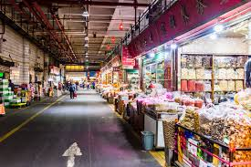

🏠︎ পাইকারি বাজার - 𝗣𝗮𝗶𝗸𝗮𝗿𝗶 𝗕𝗮𝘇𝗮𝗿
হ্যালো সবাইকে !

সবচেয়ে সাশ্রয়ী মূল্যে মানসম্মত পণ্য কোথায় পাবেন ? - এই অত্যন্ত গুরুত্বপূর্ণ প্রশ্নের উত্তরই বিশদভাবে আলোচনা করা হয়েছে এই ওয়েবসাইটটিতে।
ডিজিটাল যুগের আশীর্বাদে ব্যবসা-বাণিজ্য পরিচালনা এখন আগের চেয়ে অনেক সহজ হয়ে উঠেছে। বিশেষ করে, সামাজিক যোগাযোগ মাধ্যমকে কাজে লাগিয়েই প্রতিদিন অসংখ্য ক্ষুদ্র ব্যবসা আত্মপ্রকাশ করছে। চাকরির বাজারে তীব্র প্রতিযোগিতার মুখে তরুণসমাজও এখন ব্যবসার সম্ভাবনাময় জগতের দিকে ঝুঁকছে।
ব্যবসা করার মতো পণ্যের সম্ভারও বিশাল। তবে, কোন পণ্য নিয়ে ব্যবসা করবেন, তা নির্ধারণের আগে সময়, স্থান এবং বাজারের চাহিদা ইত্যাদি বিষয়গুলো বিবেচনা করা প্রয়োজন।
কিন্তু ব্যবসা শুরু করার পরিকল্পনা করলেই প্রথম যে মৌলিক প্রশ্নটি উদ্যোক্তার মনে উঁকি দেয়, তা হলো – এই ব্যবসার জন্য পণ্য সংগ্রহ করা হবে কোথা থেকে? এটা বলাই বাহুল্য যে, পণ্যের ক্রয়মূল্য এবং বিক্রয়মূল্যের মধ্যে পার্থক্য যত বেশি রাখা যাবে, ব্যবসায় লাভের সম্ভাবনাও তত বাড়বে। অর্থাৎ, একদিকে যেমন সবচেয়ে কম দামে ভালো মানের পণ্য সংগ্রহ করতে হবে, তেমনি অন্যদিকে তা যথাসম্ভব আকর্ষণীয় মূল্যে বিক্রি করার দক্ষতাও অর্জন করতে হবে।
🔔 সতর্কতা :
এই বইতে উল্লেখ করা স্থান, বাজার এবং দোকানগুলোর সাথে আমাদের কোনো প্রত্যক্ষ বা পরোক্ষ সম্পর্ক নেই। আমরা শুধুমাত্র বিভিন্ন পাইকারি বাজার পরিদর্শন করে তথ্য সংগ্রহ করেছি এবং তা এখানে উপস্থাপন করেছি।
📌 লেনদেনের ক্ষেত্রে সতর্কতা অবলম্বন করুন :
যদি আপনি কোনো দোকানের সাথে লেনদেন করেন, তা আপনার ব্যক্তিগত দায়িত্বে করবেন। ফোনে যোগাযোগ করে বিকাশ বা নগদের মাধ্যমে টাকা পাঠানোর ক্ষেত্রে প্রতারণার শিকার হলে আমরা তার জন্য দায়ী থাকবো না।
🧠 বাজারে সতর্ক থাকুন :
বিভিন্ন বাজারে ঘোরার সময় অনেক লোক আপনার সাথে কথা বলতে আসবে। তাদের মধ্যে অনেকেই দালাল হতে পারে, যারা কমিশনের লোভে আপনাকে ভুল দোকানে নিয়ে যেতে পারে। তাই সকলের সাথে সাবধানে কথা বলুন এবং যাচাই-বাছাই করে সিদ্ধান্ত নিন।
🛍️ সঠিক দোকান বাছাই করুন :
পাইকারি বাজারে গেলেই যে আপনি সরাসরি পাইকারি দামে মাল পাবেন—তা নয়। আপনাকে নিজেই পর্যবেক্ষণ করে বুঝতে হবে কোন দোকান আসলেই পাইকারি সরবরাহ করে। তাই একটি বাজারে ঢুকেই দ্রুত সিদ্ধান্ত না নিয়ে, পুরো মার্কেট ঘুরে ঘুরে দেখে তারপর সঠিক দোকান নির্ধারণ করুন।
বোরকা - Borka
বোরকা - Borka

ঢাকার কালিগঞ্জ, রানীগঞ্জে (ঢাকা ১৩১০) বোরকার সর্ববৃহৎ পাইকারি বাজার রয়েছে। দেশি-বিদেশি সব ধরনের ডিজাইনের বোরকা এখানে পাইকারি দামে কেনা-বেচা করা হয়। দাম ২০০/২৫০ টাকা থেকে শুরু করে সব রকম দামের মধ্যেই বোরকা পাওয়া যায়।
📍 এখানে রেডিমেড বোরকার অন্যতম মার্কেট হলো: আলম মল মার্কেট (২য় তলা)
📍 আরেকটি অন্যতম মার্কেট হলো: এস.আর. শপিং মল (২য় তলা) (বোরকার জন্য সেরা)
বোরকার জন্য অবশ্যয় পুরান ঢাকার ইসলামপুরও যেতে পারেন।
যারা চট্টগ্রামের দিকে রয়েছেন তারা চট্টগ্রামের টেরি বাজার থেকে বোরকা সোসিং করতে পারেন।
পাঞ্জাবি - Panjabi
পাঞ্জাবি - Panjabi

ছেলের পোশাকের মধ্যে আকর্ষণীয় কেনাকাটার জন্য পাঞ্জাবি একটি ভালো অপশন। আপনি যদি পাঞ্জাবি পাইকারি দামে কিনতে চান, তাহলে প্রথমেই চলে যেতে হবে সদরঘাট, ঢাকা-১১০০
📍 সদরঘাটে পাঞ্জাবির অন্যতম মার্কেট হলো : শরীফ মার্কেট
📍 সদরঘাটের কাছেই আরেকটি জায়গা হলো: মুন কমপ্লেক্স - 2nd Floor
এখান থেকে দেশি-বিদেশী পাঞ্জাবি, শেরওয়ানি এবং পাঞ্জাবি তৈরির থান কাপড় পাইকারিতে সোসিং করতে পারবেন।
তবে আপনি সদরঘাট পার হয়ে কেরানীগঞ্জ, ঢাকা-১৩১০ থেকেও পাঞ্জাবি সোসিং করতে পারেন।
📍 কেরানীগঞ্জে পাঞ্জাবির অন্যতম মার্কেট হলো: এস.আর. শপিং মল
📍 কেরানীগঞ্জে আরেকটি পাইকারি পাঞ্জাবির মার্কেট: আলম মল মার্কেট
পাঞ্জাবি, পাজামা, জুব্বার গজ ও থান কাপড়ের আরেকটি অন্যতম স্থান হচ্ছে "আবুরহাট, কাঠপিছ পট্টি"।
যারা চট্টগ্রামের দিকে রয়েছেন তারা চট্টগ্রামের টেরি বাজার থেকে পাঞ্জাবি সোসিং করতে পারেন।
শার্ট, প্যান্ট, থান কাপড় - Shirts, Pants, Fabric
শার্ট, প্যান্ট, থান কাপড় - Shirts, Pants, Fabric

শার্ট, প্যান্ট, স্যুট তৈরির সব ধরনের থান কাপড়ের অন্যতম পাইকারি বাজার হলো ইসলামপুর, ঢাকা-১১০০।
📍 এখানে অন্যতম একটি মার্কেট হলো: চায়না মার্কেট
📍 এখানে আরেকটি অন্যতম মার্কেট: লায়ন টাওয়ার (Ground Floor)
📍 আরও একটি মার্কেট: ইসলামপুর প্লাজা (Ground Floor)
📍 দেশের আরেকটি অন্যতম পাইকারি বাজার সেখেরচর-বাবুরাহাট। শার্ট, প্যান্ট, সু্যটার তৈরির থান কাপড় পাবেন এই ঠিকানায়: সেখেরচর, বাবুনারহাট প্ল্যাজা রোড
📍 যারা চট্টগ্রামের দিকে রয়েছেন তারা চট্টগ্রামের টেরি বাজার থেকে সোসিং করতে পারেন।
রেডিমেড শার্ট - Ready-made Shirt
রেডিমেড শার্ট - Ready-made Shirt

শার্টের কয়েকটি ক্যাটাগরি রয়েছে। আপনি যদি গড় দামে রেডিমেড শার্ট পাইকারিতে কিনে ব্যবসা করতে চান, তাহলে কেরানীগঞ্জ চলে যান।
📍 কেরানীগঞ্জে রেডিমেড শার্টের অন্যতম একটি মার্কেট: নুর সুপুর মার্কেট (কালীগঞ্জ, চৌধুরীর নগর দক্ষিণ কেরানীগঞ্জ, ঢাকা - ১৩১০)
ব্যান্ডেড রেডিমেড শার্ট যেমন - 'Easy', 'Plus point' এবং এরকম যত ব্যান্ড রয়েছে, এগুলো আপনি অন্য কোথাও পাবেন না, সরাসরি ব্র্যান্ডের সাথে কথা বলতে হবে।
উচ্চমানের ইন্ডিয়ান শার্টগুলোর তেমন পাইকারি বাজার নেই, তবে বছরে একবার বাণিজ্য মেলা বসে, সেখান থেকে আপনি ইন্ডিয়ান স্টল ম্যানেজারদের সাথে কথা বলে ইন্ডিয়ান শার্ট-প্যান্ট, থ্রি-পিস, লেহেঙ্গা, শেরওয়ানি ইত্যাদি পণ্যের লিংক তৈরি করে নিতে পারেন।
তবে সবচেয়ে ভালো হয় আপনি যদি "ইসলামপুর" থেকে শার্টের কাপড় কিনে কোনো গার্মেন্টস থেকে বানিয়ে নিতে পারেন
রেডিমেড টি-শার্ট - Ready-made T-shirt
রেডিমেড টি-শার্ট - Ready-made T-shirt

টি-শার্ট খুবই দ্রুত বৃদ্ধি পাকে এবং এর ব্র্যান্ডগুলো অনেক জায়গায় পাইকারিভাবে কাজ করছে। আপনি এই ব্যবসা সহজেই করতে পারেন। ঢাকার মধ্যে টি-শার্টের ক্ষেত্রে সবচেয়ে নামকরা পাইকারি বাজার হলো গুলিস্তান।
📍 গুলিস্তানে অন্যতম কয়েকটি মার্কেট : ট্রেড সেন্টার, সিদ্দিক প্লাজা, বরিশাল প্লাজা, নগর প্লাজা
📍 বঙ্গবাজার: কমদামের টি-শার্টের আদর্শ ঠিকানা ।
যারা কমদামের টি-শার্ট খুঁজছেন, তাদের জন্য বঙ্গবাজার একটি আদর্শ জায়গা।
বঙ্গবাজার যেহেতু গুলিস্তানের একদম পাশেই অবস্থিত, তাই এখানে কেনাকাটা করতে গেলে খুব সহজেই গুলিস্তানও ঘুরে আসার সুযোগ থাকে। একইভাবে, যদি কেউ গুলিস্তানে যান, তাহলে তিনিও খুব সহজেই বঙ্গবাজারের দিকেও চলে আসতে পারেন।
📍 আশরাফ সেতু শপিং কমপ্লেক্স: টঙ্গীর পাইকারি টি-শার্টের আস্তানা টঙ্গীতে যারা পাইকারি দামে টি-শার্ট কিনতে চান, তাদের জন্য একটি উল্লেখযোগ্য ঠিকানা হলো আশরাফ সেতু শপিং কমপ্লেক্স।
এখানে আপনি এক্সপোর্ট কোয়ালিটির টি-শার্ট পাবেন। এই বাজারের মূল আকর্ষণ হলো, এখানকার টি-শার্টগুলো দামে সাশ্রয়ী হওয়ার পাশাপাশি মানও বেশ ভালো।
📍 শাহবাগ: থিমভিত্তিক টি-শার্টের অনন্য ঠিকানা বিভিন্ন ধরনের ও ডিজাইনের টি-শার্টের জন্য শাহবাগে অবস্থিত "আজিজ সুপার মার্কেট" বেশ পরিচিত।
গামছা,লুঙ্গি - Gamcha, Lungi
গামছা,লুঙ্গি - Gamcha, Lungi

গামছা এবং লুঙ্গির জন্য ভুলতা, রূপগঞ্জ, নারায়ণগঞ্জ হলো বিখ্যাত স্থান।
📍 ভুলতলার অন্যতম একটি মার্কেট হলো: গাউছিয়া সিটি মার্কেট
⚠️ সতর্কতা! অনেকেই রাস্তার ধারের বাজারটিকে পাইকারি বাজার বলে ভুল করেন। তবে, আসল পাইকারি বাজারটি পেতে হলে পাশের একটি গলি দিয়ে একটু ভেতরের দিকে যেতে হবে। সবচেয়ে ভালো হয় যদি আপনি ম্যাপ ব্যবহার করে সঠিক স্থানে পৌঁছান।
📍 লুঙ্গির জন্য গাঁওহিয়া সিটি মার্কেটের গ্রাউন্ড ফ্লোরের দোকান:
📍 গামছা ও লুঙ্গি জন্য গাঁওহিয়া সিটি মার্কেটের ২য় তলায়: মেসার্স ফায়সাল গার্মেন্টস
📍 লুঙ্গি ও গামছার পাইকারি কেনাকাটার জন্য আরেকটি অন্যতম গুরুত্বপূর্ণ স্থান হলো: বাবুরহাট মসজিদ রোড, গামছা পট্টি (শেখেরচর, নরসিংদী)
এছাড়াও ঢাকার ইসলামপুর থেকেও লুঙ্গি পাইকারি সোসিং করতে পারেন।
যারা চট্টগ্রামের দিকে রয়েছেন তারা রিয়াজুদ্দিন বাজার থেকেও লুঙ্গি, গামছা সোসিং করতে পারেন। (রিয়াজুদ্দিন বাজার অনেক বড়, তাই ওয়েবসাইটে লিঙ্ক অনুসরণ করুন)।
থ্রি-পিস - Three-Piece
থ্রি-পিস - Three-Piece

বর্তমানে বাংলাদেশে উদ্যোক্তাদের অন্যতম একটি আগ্রহের জায়গা হলো থ্রি-পিস। তাই বাংলাদেশে অনেক জায়গায় থ্রি-পিস পাইকারি বাজার গড়ে উঠেছে। যদি কম দামে সব ধরনের থ্রি-পিস পাইকারি কিনতে চান, তাহলে আপনাকে চলে যেতে হবে পুরান ঢাকার ইসলামপুর।
📍 ইসলামপুরে থ্রি-পিসের অন্যতম পাইকারি মার্কেট: লায়ন টাওয়ার (১০৮, ইসলামপুর রোড, ঢাকা-১১০০)
📍 আরেকটি উল্লেখযোগ্য মার্কেট: বাবুলি ইসলামপুর কমপ্লেক্স (২নং ওয়াজঘাট রোড, ইসলামপুর, ঢাকা)
এছাড়া বাংলাদেশের আরেকটি অন্যতম কাপড়ের বাজার বাবুরহাটেও রয়েছে থ্রি-পিসের সমারোহ, ঠিকানা: বাবুরহাট, ঘুমকেতুর মাঠ
📍 বাবুরহাটে থ্রি-পিসের আরেকটি উল্লেখযোগ্য মার্কেট: লেক টাওয়ার
যারা চট্টগ্রামের দিকে রয়েছেন তারা চট্টগ্রামের টেরি বাজার থেকে থ্রি-পিস সোসিং করতে পারেন।
প্রিন্টেড এবং এক রঙ্গের গজ কাপড়
প্রিন্টেড এবং এক রঙ্গের গজ কাপড় - Printed and Solid Color Fabric

বাংলাদেশে প্রিন্টেড এবং গজ কাপড়ের অন্যতম পাইকারি বাজার হিসাবে শেখরচরের বাবুরহাটাকেই ধরা হয়ে থাকে।
📍 বাবুরহাট বণিক সমিতির সাথে অবস্থিত স্থানটি (সকল এক রঙের গজ কাপড় এখানে সুলভ মূল্যে পাওয়া যাবে)
📍 সকল প্রকারের গজ কাপড় পাবেন বাবুরহাটের থ্রি-পিস পট্টিতে
📍 বাবুরহাটের ধুমকেতুর মাঠ নামে পরিচিত স্থানেও গজ কাপড় সুলভ মূল্যে বিক্রি হয়।
📍 গজ কাপড়ের আরেকটি পাইকারি বাজার: পুরাণ ঢাকার ইসলামপুর
যারা চট্টগ্রামের দিকে রয়েছেন তারা চট্টগ্রামের টেরি বাজার থেকে গজ কাপড় সোসিং করতে পারেন।
লিলেন থান কাপড়, গেবাডিং, ডেনিম, নেট কাপড়, জর্জেন্ট এবং যাবতীয় বোরকার থান কাপড়
লিলেন থান কাপড়, গেবাডিং, ডেনিম, নেট কাপড়, জর্জেন্ট এবং যাবতীয় বোরকার থান কাপড় - Linen, Gabardine, Denim, Net, Georgette & Borka Fabrics

লিলেন থান কাপড়, গেবাডিং, ডেনিম, নেট কাপড়, জর্জেন্ট এবং যাবতীয় বোরকার থান কাপড়ের জন্য সেরা জায়গা হলো: আহ্সান উল্লাহ রোড, নবাব বাড়ি, ইসলামপুর, ঢাকা-১১০০।
📍 এখানকার অন্যতম একটি মার্কেট: গুলশান আরা সিটি
📍 আরেকটি অন্যতম মার্কেট: শুভ্ররাজ টাওয়ার
📍 আরও একটি মার্কেট: আল ইসলাম কমপ্লেক্স - ১
📍 আরও একটি অন্যতম মার্কেট: বিক্রমপুর গার্ডেন সিটি
ছোট বাচ্চাদের জামা-কাপড় (১-১৩ বছর)
ছোট বাচ্চাদের জামা-কাপড় (১-১৩ বছর) - Small Children's Clothes (1-13 years)

বিভিন্ন বয়সের ছোট বাচ্চাদের জামা-কাপড়ের জন্য চলে যেতে হবে: সদরঘাট, ঢাকা-১১০০।
📍 এখানে অন্যতম একটি মার্কেট: মিউনিসিপ্যাল হকার্স মার্কেট
📍 এখানে আরও দুটি মার্কেট: লস্কর পট্টি হকার্স মার্কেট এবং সিটি কর্পোরেশন হকার্স মার্কেট।
📍 আরেকটি অন্যতম মার্কেট: ইস্ট বেঙ্গল ইনস্টিটিউশন সুপার মার্কেট (২য় & ৩য় ফ্লোর)
ঠিকানা: ২নং চিত্তরঞ্জন এভিনিউ, সদরঘাট, ঢাকা-১১০০
📍 এই মার্কেটে অন্যতম একটি দোকানের নাম: নুপুর গার্মেন্টস (৩য় তলায়)
ভুলতা, রূপগঞ্জ, গাউছিয়া সিটি মার্কেটের উপরে প্রতি মঙ্গলবার একটি হাট বসে। সেখানে ছোট বাচ্চাদের জামাকাপড় সহ বিভিন্ন রকম কাপড় পাওয়া যায়।
জিন্স, গেবার্ডিং প্যান্ট, ট্রাউজার
জিন্স, গেবার্ডিং প্যান্ট, ট্রাউজার - Jeans, Gabardine Pants, Trousers

ঢাকার অদূরে, বুড়িগঙ্গা নদীর মনোরম তীর ঘেঁষে গড়ে ওঠা কেরানীগঞ্জের পাইকারি বাজারটি জিন্স, গ্যাবার্ডিন প্যান্ট এবং ট্রাউজারের দেশের সর্ববৃহৎ পাইকারি বাজার। (পূর্ব আগানগর, দঃ কেরানীগঞ্জ, ঢাকা-১৩১০)
এখানে অন্যতম কিছু মার্কেটের নাম এবং গুগল ম্যাপ লিংক দেওয়া হলো:
📍 তানাকা গার্মেন্টস মার্কেট
📍 টোকিও টাওয়ার (1st Floor)
কেরানীগঞ্জে জিন্স প্যান্টের জন্য আরও একটি উল্লেখযোগ্য স্থান: কালীগঞ্জ, চৌধুরী নগর, দক্ষিণ কেরানীগঞ্জ, ঢাকা ১৩১০
এখানে অন্যতম কিছু মার্কেটের নাম এবং গুগল ম্যাপ লিংক দেওয়া হলো:
📍 নূর সুপার মার্কেট
📍 সাদ্দাম টাওয়ার
📍 রফিক টাওয়ার
📍 আল মদিনা টাওয়ার
📍 হাজী ফরহাদ ঢালী মার্কেট
📍 সেঞ্চুরি টাওয়ার
📍 রিফাত কমপ্লেক্স
Note: এখানে মার্কেট গুলো প্রায় সব একসাথে, গুগল ম্যাপ কাজ না করলেও পাশাপাশি মার্কেটের নাম অনুযায়ী খুঁজলেই পেয়ে যাবেন।
প্যান্ট তৈরির উপকরণ এবং থান কাপড়
প্যান্ট তৈরির উপকরণ এবং থান কাপড় - Pant Making Supplies and Fabric

মূলত কেরানীগঞ্জেই (পূর্ব আগানগর, দঃ কেরানীগঞ্জ, ঢাকা ১৩১০) আপনি বিভিন্ন রকমের প্যান্ট তৈরির থান কাপড় পেয়ে যাবেন এবং প্যান্ট তৈরির আরো যেসব উপকরণ লাগে সে কিছুতেই এখানে দেয়া। এখানকার উল্লেখযোগ্য কিছু মার্কেটের নাম নিচে উল্লেখ করা হলোঃ
📍 ইনসাফ মার্কেট(২য় এবং ৩য় তলায়)
📍 মাকসুদা গার্ডেন সিটি
📍 টোকিও টাওয়ার (2nd & 3rd Floor)
প্যান্টের ইলাস্টিকের জন্য ইনসাফ মার্কেটের আশেপাশে অনেক দোকান রয়েছে এবং ইনসাফ মার্কেটের ১ম তলায় ইলাস্টিক পাবেন।
📍 ইনসাফ মার্কেট (1st Floor)
প্যান্ট তৈরির সকল উপকরণের জন্য চলে যেতে পারেনঃ পূর্ব আগানগর, শহীদ দেলোয়ার হোসেন রোড, দঃ কেরানীগঞ্জ, ঢাকা-১১০০
📍 এখানে অন্যতম একটি মার্কেটের নামঃ বিসমিল্লাহ মার্কেট (নিচতলায়, ভিতরের দিকে)
তাছারা সকল প্রকার এমব্রুডায়রি সুতা প্রস্তুতকারক লাইনিং, ববিন সুতা, টেপ এবং গার্মেন্টস সকল প্রকার খুচরা মালামালের জন্য চলে যেতে পারবেনঃ নাগরমহল রোড, পূর্ব আগানগর, দঃ কেরানীগঞ্জ, ঢাকা-১৩১০
📍 এখানে অন্ততম একটি মার্কেটের নামঃ সম্রাট শাহজাহান টাওয়ার
রং ছাড়া কাপড় (গ্রে কাপড়)
রং ছাড়া কাপড় (গ্রে কাপড়) - Raw Fabric (Grey Fabric)

রং ছাড়া অথবা কোন প্রকার ছাপ ছাড়া কাপড় কিনতে হলে আপনাকে চলে যেতে হবে নরসিংদীর মাধবদীতে (পুলিশ ফাঁড়ি রোড এবং এর আশেপাশে)
এখানে গ্রে কাপড়ের সুতার ডিলারদের সন্ধান পেতে আপনাকে যেতে হবেঃ ব্যাংক পট্টি, মাধবদী, নরসিংদী
খেলাধুলার জার্সি, ট্রাউজার, সরঞ্জাম
খেলাধুলার জার্সি, ট্রাউজার, সরঞ্জাম - Sports Jerseys, Trousers, Equipment

সকল ধরনের খেলাধুলার জার্সি এবং ট্রাউজারের সর্ববৃহৎ পাইকারি মার্কেট হচ্ছেঃ সমবায় টুইন টাওয়ার মার্কেট, ৪৬ বঙ্গবন্ধু এভিনিউ, ঢাকা-১০০০
📍 ক্রিকেট বল, ব্যাট এবং অন্যান্য খেলার সকল সরঞ্জামের জন্য "২য় তলা সেরা"
এখানে অন্ততম একটি দোকানের নামঃ একটিভ স্পোর্টস
বিভিন্ন ধরনের ট্রফি, মেডেল, ক্রেস্ট জাতীয় প্রোডাক্টের জন্য অন্ততম একটি দোকানঃ গোল্ড স্পোর্টস এন্ড মেটালিক
ক্রিকেট ব্যাটের জন্য বিভিন্ন ধরনের স্টিকারের জন্য অন্ততম একটি দোকানঃ এন. এস. এল. খান স্পোর্টস (Shop No:4081-North Side, Third Floor)
এই ধরনের পণ্য চট্টগ্রাম থেকে সোর্সিং করতে চাইলে চলে যাবেনঃ রিয়াজুদ্দিন বাজার। এখানে অন্ততম একটি মার্কেটের নামঃ নিশা প্লাজা (নূপুর গলি, রিয়াজউদ্দিন বাজার, চট্টগ্রাম)
সুতা (Suta) - Thread or yarn
সুতা (Suta) - Thread or yarn

বাংলাদেশের মধ্যে অন্ততম একটি সুতার পাইকারি বাজার হচ্ছেঃ নারায়ণগঞ্জের, টানবাজার
বাংলাদেশে আরো একটি অন্ততম পাইকারি সুতার বাজার অবস্থিত নরসিংদীর মাধবদীতে (সোনার বাংলা মার্কেট-সুতা পট্টি)
সার্জিক্যাল মাস্ক সহ সকল ধরণের মাস্ক
সার্জিক্যাল মাস্ক সহ সকল ধরণের মাস্ক - Surgical Mask and All Types of Masks

সার্জিক্যাল মাস্ক সহ সকল ধরনের মাস্ক পাইকারিতে সোর্সিং করতে চাইলে যেতে হবেঃ আকমল খান রোড (বাবুবাজার), ঢাকা-১১০০
যারা চট্টগ্রামের দিকে রয়েছেন তারা রিয়াজুদ্দিন বাজারের "গোলাম রসুল মার্কেট-নিচ তলা" থেকে বিভিন্ন ধরনের মাস্ক পাইকারিতে সোর্সিং করতে পারবেন।
লেইস/টার্সেল(ঝালর) - Lace/Tassel
লেইস/টার্সেল(ঝালর) - Lace/Tassel

লেইস এবং টার্সেলের বৃহত্তম পাইকারি বাজার অবস্থিত সদরঘাট, ঢাকা-১১০০
📍 এখানে লেইস/টার্সেলের অন্ততম একটি মার্কেটের নামঃ সিটি প্লাজা (৮/১ চিত্তরঞ্জন এভিনিউ, সদরঘাট, ঢাকা-১১০০)
📍 এখানে অন্ততম একটি দোকানের নামঃ এম.এস শাহাদাত এন্টারপ্রাইজ (সিটি প্লাজা মার্কেট, শপ নংঃ ১৩, প্রথম তলায়)
এখান থেকে বিভিন্ন ধরনের চুমকি, পুঁতিও সোর্সিং করতে পারবেন।
আন্ডার গার্মেন্টস - Under Garments
আন্ডার গার্মেন্টস - Under Garments

ঢাকা, গুলিস্থান, সদরঘাট, ইসলামপুর, নিউ মার্কেট ও গাউছিয়া মার্কেটে পাইকারি মূল্যে লেডিস আন্ডারগার্মেন্টস পাবেন। তাছাড়া, আরও কিছু উল্লেখযোগ্য স্থানের নাম নিচে উল্লেখ করা হলো।
যারা চকবাজার থেকে সোর্সিং করতে চাচ্ছেন তারা চলে যাবেনঃ চক বাজার বানিক সমিতি গলি, ৬৫/১ চকবাজার, ঢাকা-১২১১
বাংলাদেশের অন্যতম একটি কাপড়ের বাজার বাবুরাহাট থেকে ও সুলভ মূল্যে আন্ডার গার্মেন্টস সোর্সিং করতে পারেন।
যারা চট্টগ্রামের দিকে রয়েছেন তারা রিয়াজুদ্দিন বাজার থেকে আন্ডার গার্মেন্টস সোর্সিং করতে পারেন।
📍 এখানে আন্ডার গার্মেন্টসের আরেকটি অন্ততম মার্কেটঃ গোলাম রসুল মার্কেট-নিচ তলা
শাড়ি - Saree
শাড়ি - Saree

পুরান ঢাকায় অবস্থিত এই ইসলামপুর বাজার হলো সবচেয়ে প্রাচীন ও ঐতিহ্যবাহী পাইকারি শাড়ির বাজার। এখানে নানা ধরনের শাড়ি পাইকারি দামে পাওয়া যায়, যা দেশের বিভিন্ন প্রান্তের খুচরা বিক্রেতাদের জন্য একটি গুরুত্বপূর্ণ সোর্সিং কেন্দ্র।
শুক্রবার ছাড়া ও বিশেষ বন্ধের দিন ছাড়া বাকি দিন এই বাজার খোলা থাকে।
📍 পাইকারি শাড়ি কাপড়ের আরেকটি বিখ্যাত মার্কেট হলো: নরসিংদী বাবুর হাট ।
এই হাটটি শুরুতে কেবল রবিবারে বসতো। কিন্তু বর্তমানে ক্রেতাদের ব্যাপক চাহিদার কারণে, এটি সপ্তাহে দুই দিন— "শুক্রবার ও শনিবার"—বসে
📍 টাঙ্গাইলের তাঁতের শাড়ি তার স্বতন্ত্র বুনন, মনোমুগ্ধকর নকশা এবং আরামদায়কতার জন্য পৃথিবী বিখ্যাত। এই শাড়ির প্রধান দুটি প্রকার হলো সুতি এবং হাফসিল্ক শাড়ি, যা রুচিশীল নারীদের পছন্দের শীর্ষে থাকে।
টাঙ্গাইল জেলার পাথরাইল নামক স্থানে এই ঐতিহ্যবাহী শাড়ির মূল বাজার বা আড়ৎ অবস্থিত। একসময়কার ছোট এই বাজারটি বর্তমানে ক্রেতা ও বিক্রেতাদের সমাগমে মুখরিত থাকে এবং এটি 'টাঙ্গাইল শাড়ির রাজধানী' হিসেবে ব্যাপক পরিচিতি লাভ করেছে। পাইকারি ক্রেতাদের জন্য এটি একটি নির্ভরযোগ্য ও গুরুত্বপূর্ণ কেন্দ্র।
📍 "ডেমরার জামদানি হাট" এই হাটটি সপ্তাহে কেবল শুক্রবার দিন বসে। এর অবস্থান ডেমরার শীতলক্ষ্যা নদীর তীরে, বিসিক শিল্পনগরী এলাকায়।
তবে, এই হাটের স্থায়ীত্বকাল খুব বেশি দীর্ঘ হয় না। তাই সেরা জিনিসটি পেতে হলে একদম সকালের দিকে যাওয়াই উত্তম।
📍 "রাজশাহী সিল্কের শাড়ির পাইকারি মার্কেট" রাজশাহীর সপুরা নামক এলাকাতেই মূলত গড়ে উঠেছে এই বিখ্যাত সিল্ক শাড়ি তৈরির কারখানাগুলো। তাই, যাঁরা সাশ্রয়ী মূল্যে সরাসরি কারখানা থেকে গুণগত মানসম্পন্ন রাজশাহী সিল্ক শাড়ি সংগ্রহ করতে চান, তাঁদের জন্য রাজশাহীর সপুরা একটি আদর্শ গন্তব্য।
📍"সিলেটের মণিপুরী শাড়ির পাইকারি মার্কেট" সিলেটের লামাবাজারে তৈরি হয়েছে এই মনিপুরি কাপড়ের বিশাল বাজার।
সরাসরি তাতিদের কাছ থেকে এখানে মনিপুরি শাড়ি ক্রয় করা যায়।
বেডশিট এবং সব ধরনের দরজা, জানালার পর্দা
বেডশিট এবং সব ধরনের দরজা, জানালার পর্দা - Bedsheets and All Types of Doors, Window Curtains

বিভিন্ন ধরনের পর্দা, সোফার কভার, বেডশিট, কুশন কভার, সেইসাথে নানা ধরনের কম্ফোর্টার ও মশারির জন্য বাংলাদেশের প্রধান এবং বৃহত্তম পাইকারি বাজার হলো: ইসলামপুর, ঢাকা-১১০০
এখানে অন্যতম কিছু মার্কেটের নামঃ
📍 করিম ম্যানসন (ঢাকা টাওয়ার) ৬, ইসলামপুর, ঢাকা ১১০০
📍 জাহাঙ্গীর টাওয়ার
📍 জিয়া কমপ্লেক্স
এছাড়া বাংলাদেশের আরেকটি অন্ততম স্থান বাবুরাহাট থেকেও এ ধরনের পণ্য সোর্সিং করতে পারেন।
বাবুরহাটের, বেডশিট পট্টিতে এ ধরনের পণ্য পাবেন (ম্যাপ অনুযায়ী যেতে পারেন)
📍 এখানে মশারির জন্য অন্ততম স্থানঃ বাবুরাহাট, মশারি পট্টি
বাবুরহাটে লেন, তোষক, জাজিমের কাভারের জন্য যেতে হবেঃ সাত তলা মোড়
বাবুবাজারে পর্দা, সোফার কভার, বেডশিট, কুশন কভারের জন্য আরেকটি অন্যতম স্থানঃ সাত তলা মোড় (একটু ভেতরের দিকে)
📍 আরেকটি স্থানঃ
📍 এখানে অন্যতম একটি দোকানের নামঃ রিফাত ক্লথ স্টোর (01720414760-imo)
📍 এখানে কম্বলের জন্য যেতে হবেঃ হাজী জোহর আলী মার্কেট
📍 হাজী জোহর আলী মার্কেটে সালু কাপড় (লেপের কভার বানাতে সাধারণত যে কাপড় ব্যবহার করা হয়) এবং মার্কিং কাপড় (লাশের কাপড় হিসেবে ব্যবহার করা হয়) পাবেন। এই কাপড়গুলো বাবুরহাটের নিচের ম্যাপ অনুযায়ী গেলেই পেয়ে যাবেন।
যারা চট্টগ্রামের দিকে রয়েছেন তারা বেডশিট, বিভিন্ন রকম পর্দা, কুশন, সোফার কাভার রিয়াজুদ্দিন বাজার থেকে সোর্সিং করতে পারবেন।
📍 এখানে অন্ততম একটি মার্কেটের নামঃ শাহজালালবাগ মার্কেট
ইসলামিক গ্রন্থাবলী - Islamic Books
ইসলামিক গ্রন্থাবলী - Islamic Books

জায়নামাজ, তাসবিহ, রেহাল, আতর, টুপি, মেসওয়াক, হাজী রুমাল ইত্যাদি ইসলামিক প্রসাধনীর অন্তর্ভুক্ত।
📍 এ জাতীয় পণ্যের অন্যতম পাইকারি বাজারের স্থান: ৫৫/৭ চক সার্কুলার রোড, চকবাজার, ঢাকা-১১০০
📍 যারা চট্টগ্রামের ওদিকে রয়েছেন তারা রিয়াজউদ্দিন বাজার থেকেও ইসলামিক প্রসাধনী সোর্সিং করতে পারেন।
এখানে ইসলামিক প্রসাধনীর অন্যতম একটি মার্কেটের নামঃ হাজী গোলাম রসুল মার্কেট (নিচ তলায়)।
সব ধরণের বই - All types of books
সব ধরণের বই - All types of books

ধর্মীয় বই, ছোটদের বর্ণমালা শিক্ষা, প্লাস্টিকের বই এবং বিভিন্ন ধরনের গল্প ও উপন্যাসের বই সহ সকল ধরনের বইয়ের জন্য যেতে হবেঃ বাংলাবাজার, ঢাকা ১১০০
📍 এখান থেকে বিভিন্ন অনুষ্ঠানের নিমন্ত্রণ কার্ড, ভিজিটিং কার্ডও সুলভ মূল্যে বানিয়ে নিতে পারবেন (৩৩/১ বাংলাবাজার, মিনি মার্কেট, ঢাকা-১১০০)।
সব সাইজের কাগজ - Paper
সব সাইজের কাগজ - Paper

সব সাইজের কাগজ পাইকারি মূল্যে সোর্সিং করতে চাইলে যেতে হবেঃ জুমরাইল লেন (নওয়াব ইউসুফ রোড), আরমানিটোলা, ঢাকা-১১০০
এখানে অন্যতম কাগজ সরবরাহকারী ও আমদানিকারকঃ প্রত্যাশী ট্রেড সেন্টার
📍 সব সাইজের খাতা, ডায়েরি, কাগজের জন্য আরও একটি অন্যতম স্থান হলো : ৫২, হাকিম হাবিবুর রহমান রোড, চকবাজার, ঢাকা-১২১১
📍 এখানকার অন্যতম একটি সেলার এর নাম : ভুইয়া পেপার হাউস
কলম - Pens
কলম - Pens

বাংলাদেশে কলমের সবচেয়ে বড় পাইকারি আড়ত হলো : চকবাজার, ঢাকা।
এছাড়াও চট্টগ্রামের রিয়াজুদ্দিন বাজারের (গোলাম রাসুল মার্কেট) থেকেও কলম সংগ্রহ করতে পারেন।
এছাড়া, আপনি চাইলে এখান থেকে বিভিন্ন ধরনের বই, খাতা সহ সংগ্রহ করতে পারেন।
জালি ব্যাগ - Net Bag
জালি ব্যাগ - Net Bag

যেসব জালি ব্যাগ দিয়ে সাধারণত বাজার সদাই বহন করা হয়, সে সব জালি ব্যাগের অনেক কারখানা রয়েছে দেশের অনেক প্রান্তে।
📍 তবে জালি ব্যাগ সোর্সিং করার অন্যতম একটি স্থান হলো: তুলতা, রূপগঞ্জ (গাউছিয়া সিটি মার্কেটের নিচ তলায়)
📍 এখানে অন্যতম একটি সেলস সেন্টারের নাম: শাহীন নেট ব্যাগ
ভ্যারাইটিজ পণ্য-সামগ্রী - Variety Goods
ভ্যারাইটিজ পণ্য-সামগ্রী - Variety Goods

ব্রাশ, টুথপিক, চিরুনি, নেইল কাটার, সুঁই সহ যত ছোটখাটো পণ্য সামগ্রীর প্রয়োজন হয় এসব কিছু পাইকারিভাবে সোর্সিং করতে হলে আপনাকে যেতে হবে ঢাকার চকবাজারে
📍 এসব পণের জন্য অন্যতম একটি মার্কেটের নাম: মোহাম্মদ আলি মার্কেট (১৩৮, মোগলটুলী, ঢাকা-১২১১)
ক্রোকারিজ আইটেম - Crockery Items
ক্রোকারিজ আইটেম - Crockery Items

রাইস কুকার, ফ্রাই প্যান, প্রেশার কুকার, রুটি মেকার সহ যাবতীয় ক্রোকারিজ আইটেম ও কিচেন পণ্য এবং সকল অনলাইন ভিত্তিক বিক্রিত পণ্য পাইকারি সোর্সিং করতে পারবেন ঢাকার চকবাজার থেকে।
📍 ক্রোকারিজ আইটেমের অন্যতম একটি মার্কেটের নাম: বিসমিল্লাহ টাওয়ার (১৪৭-১৪৮ মিটফোর্ড রোড, ঢাকা-১২১১)
📍 এখানে অন্যতম একটি ইমপোর্টার সেলস সেন্টারের নাম: শাহী ইন্টারন্যাশনাল (বিসমিল্লাহ টাওয়ার-৫ম তলা)।
মেলামাইন পণ্য - Melamine Products
মেলামাইন পণ্য - Melamine Products

মেলামাইনের যাবতীয় পণ্য এবং ক্রোকারিজ আইটেম পাইকারি সোর্সিং এর একটি অন্যতম স্থান হলো: মিডফোর্ড রোড (শরীফ মেলামাইন হেড অফিসের সাথে) ঢাকা-১১০০
অ্যালুমিনিয়াম হাঁড়ি/পাতিল - Aluminum Pots/Pans
অ্যালুমিনিয়াম হাঁড়ি/পাতিল - Aluminum Pots/Pans

ছোট বড় সব সাইজের অ্যালুমিনিয়ামের হাঁড়ি, পাতিল, কড়াই ইত্যাদি পণ্যের পাইকারি সোর্সিং করতে হলে, চলে যেতে হবে: মিডফোর্ড রোড, ঢাকা-১১০০
প্লাস্টিকের যাবতীয় পণ্য - Plastic Products
প্লাস্টিকের যাবতীয় পণ্য - Plastic Products

সব ধরনের প্লাস্টিকের পণ্য অথবা হোম এপ্লায়েন্সেস এর জন্য আপনাকে যেতে হবে: জুম্মন বেপারী লেন (নলগোলা) মিডফোর্ড, ঢাকা-১১০০
📍 এখানে অন্যতম একটি সেলস সেন্টারের নাম: মেসার্স এস.আর. প্লাষ্টিক হাউস
📍 এখানে অন্যতম একটি সেলস সেন্টারের নাম: বিসমিল্লাহ প্লাস্টিক হাউস
কাচ/সিরামিকের কিচেন পণ্য সামগ্রী
কাচ/সিরামিকের কিচেন পণ্য সামগ্রী - Glass/Ceramic Kitchenware

সব ধরনের কাচ এবং সিরামিকের কিচেন সামগ্রী (ডিনার সেট, থালাবাসন, গ্লাস ইত্যাদি) আইটেমের জন্য পাইকারি সোর্সিং করতে আপনাকে যেতে হবে: মিটফোর্ড, ঢাকা-১১০০
📍 যারা চট্টগ্রামে রয়েছেন তারা রিয়াজুদ্দিন বাজার থেকে সোর্সিং করতে পারবেন।
চট্টগ্রামে অন্যতম মার্কেট: গোলাম রসুল মার্কেট (অবশ্যই ৩য় তলায় যাবেন)।
পাটা-পুতা,চেকবল - Mortar & Pestle, Checkball
পাটা-পুতা,চেকবল - Mortar & Pestle, Checkball

পাটা-পুতা, চেকবল এবং এই ধরনের সকল পণ্যের অন্যতম একটি পাইকারি বাজার: ঢাকা-১২১১, ২৪/২ ইমামগঞ্জ বাজার লেন
📍 এখানে অন্যতম একটি মার্কেটের নাম: মোহাম্মদ আলী মার্কেট
📍 এখানে অন্যতম একটি দোকান: মেসার্স দূর্গা হার্ডওয়্যার স্টোর
কাস্টমাইজড বয়ম/বক্স - Customized Jars/Boxes
কাস্টমাইজড বয়ম/বক্স - Customized Jars/Boxes

আমরা যারা নিজে নিজে ফুড আইটেম অথবা অন্যকিছু প্রডাকশন করে বাজারে বিক্রি করতে যাই, তখন অনেক সাইজের বয়ম বা বাক্সের প্রয়োজন হয়। এ ধরণের সকল পণ্য পাইকারি সোর্সিং করতে পারবেন: ১৪/২০ মিটফোর্ড রোড, ঢাকা-১১০০
📍 এসব বয়মের জন্য আরেকটা স্থান: জুম্মন বেপারী লেন (নলগোলা), মিটফোর্ড, ঢাকা-১১০০
যারা চট্টগ্রামের ওদিকে রয়েছেন তারা রিয়াজুদ্দিন বাজার থেকে সোর্সিং করতে পারবেন।
📍 চট্টগ্রামে অন্যতম মার্কেট: গোলাম রসুল মার্কেট (1st floor)।
কাস্টমাইজড শপিং ব্যাগ/বক্স
কাস্টমাইজড শপিং ব্যাগ/বক্স - Customized Shopping Bag/Box

সব ধরনের শপিং ব্যাগ (প্রিন্টিং সহ এবং প্রিন্টিং ছাড়া), টিস্যু বক্স, গিফট বক্স, সব ধরনের কাপড়ের বক্স এবং সব ধরনের খাবারের বক্স নিজের বিজনেসের নামে বানিয়ে নিতে চাইলে আপনাকে যেতে হবে: সৈয়দ আওলাদ হোসেন লেন, নয়াবাজার, ঢাকা-১১০০
📍 যারা চট্টগ্রামের ওদিকে রয়েছেন তারা রিয়াজুদ্দিন বাজার থেকে সোর্সিং করতে পারবেন।
📍 চট্টগ্রামে অন্যতম মার্কেট: গোলাম রসুল মার্কেট (1st floor)।
কার্টুন বক্স এবং প্লাইবোর্ড
কার্টুন বক্স এবং প্লাইবোর্ড - Cartoon Box and Plywood

আমাদের বিজনেসে বিভিন্ন সাইজের কার্টুন বক্স প্রয়োজন হয়। এসব কার্টুন বক্স এবং সব সাইজের প্লাইবোর্ড সোর্সিং করতে চাইলে সবার আগে যাবেন: নয়া বাজার (ডি.আই.টি মার্কেট) ঢাকা-১১০০
📍 এখানে অন্যতম কয়েকটি মার্কেটের নাম: ডি.আই.টি মার্কেট, মিউনিসিপালিটি মার্কেট, নবাব ইউসুফ মার্কেট।
এই মার্কেটগুলোর নিচতলায় সব ধরণের প্লাইবোর্ড পাবেন এবং উপর তলা গুলো থেকে কার্টুন সোর্সিং করতে পারবেন।
📍 এছাড়াও, আপনার প্রয়োজনীয় বক্স বা কার্টুন সংগ্রহের জন্য আরেকটি জনপ্রিয় ঠিকানা হলো : চকবাজারের বিসমিল্লাহ টাওয়ারের পেছনের গলিতে অবস্থিত কানপট্টি
শো-পিস - Showpiece
শো-পিস - Showpiece

যত ধরনের দেশি-বিদেশি শো-পিস রয়েছে, প্রায় সব ধরনের শো-পিস আপনারা পাইকারিতে সোর্সিং করতে পারবেন: ১৪৭-১৪৮ মিটফোর্ড রোড, ঢাকা-১২১১
📍 এখানে অন্যতম একটি মার্কেটের নাম: বিসমিল্লাহ টাওয়ার (সব ধরনের শো-পিসের জন্য ৩য় তলায় যাবেন)
যারা চট্টগ্রামের ওদিকে রয়েছেন তারা রিয়াজুদ্দিন বাজার থেকে সোর্সিং করতে পারবেন।
📍 চট্টগ্রামে অন্যতম মার্কেট: গোলাম রসুল মার্কেট (অবশ্যই ৩য় তলায় যাবেন)।
আর্টিফিশিয়াল ফুল এবং ডেকোরেশন পণ্য
আর্টিফিশিয়াল ফুল এবং ডেকোরেশন পণ্য - Artificial Flowers & Decoration Items

আর্টিফিশিয়াল ফুল এবং ডেকোরেশনের অনেক ধরনের পণ্য সামগ্রী পাইকারিতে সোর্সিং করতে হলে আপনাকে যেতে হবে: বিসমিল্লাহ টাওয়ার (১৪৭-১৪৮ মিটফোর্ড রোড, ঢাকা-১২০০) ৩য় তলায়
গায়ে হলুদ/বিয়ে/জন্মদিনের আইটেম
গায়ে হলুদ/বিয়ে/জন্মদিনের আইটেম - Gaye Holud/Wedding/Birthday Items

আমাদের দেশে বিভিন্ন ধরনের অনুষ্ঠানে (গায়ে হলুদ/বিয়ে/জন্মদিন) যেসব আইটেম প্রয়োজন হয়, প্রায় সব কিছুই পাইকারিতে সোর্সিং করতে পারবেন ঢাকা, চকবাজার থেকে
📍 এখানে অন্যতম একটি স্থানের নাম: হাজী সলেমান ভবন, চক সার্কুলার রোড, ঢাকা
📍 এখানে অন্যতম একটি দোকান: জাভেদ সাজ ঘর
📍 যারা চট্টগ্রামের ওদিকে রয়েছেন তারা রিয়াজুদ্দিন বাজার থেকে এসব পণ্য পাইকারিতে সোর্সিং করতে পারবেন।
📍 এই ধরণের অন্যতম একটি মার্কেটের নাম: গোলাম রসুল মার্কেট (নিচ তলায়)।
বেবী আইটেম - Baby Items
বেবী আইটেম - Baby Items

বাচ্চাদের ডায়াপার, তোয়ালে, বেবি অয়েল, পাউডারসহ শিশুদের জন্য দরকারি প্রায় সবকিছুই পাইকারি দামে সংগ্রহ করার সবচেয়ে নির্ভরযোগ্য ঠিকানা হলো : ঢাকার চকবাজার
📍 এখানে অন্যতম একটি মার্কেটের নাম: মৌলভীবাজার টাওয়ার (নিচ তলা এবং বেজমেন্টে বেবি আইটেম পাওয়া যায়) চকবাজার, ঢাকা-১২১১
📍 এখানে বেবী আইটেমের অন্যতম একটি বিখ্যাত শপের নাম: মদিনা বেবী স্টোর (মৌলভীবাজার টাওয়ার, বেজমেন্ট-২)
বাচ্চাদের দেশি-বিদেশি খেলনা - Baby Toys
বাচ্চাদের দেশি-বিদেশি খেলনা - Baby Toys

বাচ্চাদের সব ধরনের খেলনার জন্য বাংলাদেশের সবচেয়ে বড় পাইকারি বাজার ঢাকার চকবাজার
📍 দেশি-বিদেশি সব ধরনের খেলনার অন্যতম পাইকারি মার্কেট: বিসমিল্লাহ টাওয়ার (১৪৭-১৪৮ মিটফোর্ড রোড, ঢাকা-১২১১)। খেলনার জন্য অবশ্যই এই মার্কেটের ৪র্থ তলায় যাবেন।
📍 দেশি-বিদেশি খেলনার জন্য অন্যতম একটি মার্কেট: জলসা মার্কেট, স্টুডিও গলি, মেইন রোড, রিয়াজুদ্দিন বাজার, চট্টগ্রাম।
মাটির তৈজসপত্র - Clayware
মাটির তৈজসপত্র - Clayware

ঢাকায় এবং চট্টগ্রাম অনেক পাইকারি বাজারে মাটির তৈরি বিভিন্ন ধরনের জিনিসপত্র পাওয়া যায়। তবে আপনি যদি সিরিয়াসলি এই বিজনেস করতে চান তাহলে আপনাকে চলে যেতে হবে বরিশালে।
বরিশালের বাকেরগঞ্জ, আগৈলঝাড়া, গৌরনদী, বানারীপাড়া, উজিরপুর উপজেলায় গেলে আপনি অনেক কম দামে বিভিন্ন মাটির জিনিসপত্র সোর্সিং করতে পারবেন।
বাঁশের তৈরি সামগ্রী - Bamboo Products
বাঁশের তৈরি সামগ্রী - Bamboo Products

বাঁশের তৈরি চালন, চাঙ্গারী, উরা, কুলা, দোলনা, মাছ ধরার পলো, চাইসহ নানান ধরনের সামগ্রী সোর্সিং করতে চাইলে চলে যেতে পারেন: মুন্সিগঞ্জের শ্রীনগর উপজেলায়
পারফিউম - Perfume
পারফিউম - Perfume

দেশে সবচেয়ে বেশি পারফিউম, বডি স্প্রে ও আতরের দোকান রয়েছে রাজধানীর মিটফোর্ড এলাকায় । বাবুবাজার মোড় থেকে মিটফোর্ড হাসপাতাল পর্যন্ত পথের দুই ধারে পারফিউম আর রাসায়নিকের দোকান রয়েছে দেড় শতাধিক। যেখানে ১৯০ টাকা থেকে শুরু করে সর্বোচ্চ মূল্যের পারফিউম সংগ্রহে রাখা হয়।
সোনা-রূপা - Gold-Silver
সোনা-রূপা - Gold-Silver

শাঁখারী বাজারের সাথেই (কোতোয়ালি রোড, তাঁতীবাজার, ঢাকা-১১০০)।
এখানে বিভিন্ন ডিজাইনের গহনা এবং সোনা, রূপা ক্রয় বিক্রয় হয়ে থাকে।
সানগ্লাস/চশমা - Sunglasses/Eyeglasses
সানগ্লাস/চশমা - Sunglasses/Eyeglasses

সব বয়সের দেশি-বিদেশি সানগ্লাস/চশমার সবচেয়ে বৃহত্তম পাইকারি বাজার পাটুয়াতুলি, ঢাকা-১১০০
📍 এখানে অন্যতম একটি মার্কেটের নাম: নুরুল হক টাওয়ার
📍 এখানে কিছু সেলস সেন্টারের নাম উল্লেখ করা হলো:
বাংলাদেশ অপটিক্স,
আল-আরাফাহ অপটিক্স,
অপটিশিয়ান্স,
মেট্রো প্রিমিয়াম অপটিক্স।
📍 এখানে আরো কিছু অন্যতম মার্কেটের নাম:
📍 জি.এম সনির মার্কেটের অন্যতম দুটি দোকানের নাম:
এস.এস এন্টারপ্রাইজ,
বাংলা অপটিক্স।
চশমা/সানগ্লাস সম্পর্কিত আরো যা কিছু রয়েছে (ফ্রেম, গ্লাস, গ্লাস ক্লিনিক প্রস্রাবী ইত্যাদি) সব কিছু এখানে থেকেই সোর্সিং করতে পারবেন। পাটুয়াতুলি মার্কেট সপ্তাহের শুক্রবার বন্ধ থাকে।
যারা চট্টগ্রাম এরদিকে রয়েছেন তারা তামাকুমন্ডি লেইন, ,রিয়াজুদ্দিন বাজার, চট্টগ্রাম থেকে চশমা এবং চশমার অন্যান্য সরঞ্জাম সোর্সিং করতে পারবেন।
📍 এখানে অন্যতম একটি মার্কেটের নাম: হাসিনা হক শপিং সেন্টার
ঘড়ি - Watch
ঘড়ি - Watch

ছেলে-মেয়েদের হাত ঘড়ি, মসজিদের জন্য কাস্টমাইজড দেয়াল ঘড়ি সহ সব ধরনের ঘড়ির জন্য বাংলাদেশের সর্ববৃহৎ পাইকারি বাজার অবস্থিতঃ পাটুয়াটুলি, ঢাকা-১১০০
📍 এখানে অন্যতম কিছু মার্কেটের নাম উল্লেখ করা হলো:
📍 এখানে আরো অনেক পাইকারি দোকান রয়েছে। তার মধ্যে অন্যতম কিছু দোকানের নাম উল্লেখ করা হলো:
সায়েম টাইম সেন্টার (হাজী ইলিয়াস মার্কেট-নিচ তলা),
বেলাল ওয়াচ কোং (হাজী ইলিয়াস মার্কেট-নিচ তলা),
এ.এস ট্রেডিং (সরকার ম্যানশন-৩য় তলা),
জামাল ওয়াচ কোং (নুরুল হক টাওয়ার)
এখানে শুধু ঘড়ি নয়, এখান থেকে আপনি মেয়েদের বিভিন্ন ধরনের ব্রেসলেট এবং ঘড়ির কমবো সেট গুলো পাইকারিতে সোর্সিং করতে পারবেন।
ঘড়ির বক্স সহ ঘড়ির যাবতীয় সরঞ্জাম (ঘড়ির বেল্ট, ঘড়ি ঠিক করার যন্ত্রপাতি ইত্যাদি) আপনি পাটুয়াটুলি থেকেই সোর্সিং করতে পারবেন।
আমাদের নিত্য প্রয়োজনীয় আরেকটি পন্য "ক্যালকুলেটর", পাটুয়াটুলি থেকেই আপনি সব ধরনের ক্যালকুলেটর হোলসেল দামে সোর্সিং করতে পারবেন।
পাটুয়াটুলি মার্কেট সপ্তাহে শুক্রবার বন্ধ থাকে।
📍 তবে আপনি যদি "স্মার্টওয়াচ" পাইকারিতে সোর্সিং করতে চান, তাহলে আপনাকে যেতে হবেঃ গুলিস্তান, ঢাকা-১০০০ (সুন্দরবন স্কয়ার সুপার মার্কেট)
📍 যারা চট্টগ্রামের ওদিকে রয়েছেন তারাঃ তামাকুমন্ডি লেন, রিয়াজউদ্দিন বাজার, চট্টগ্রাম থেকে সব ধরনের ঘড়ি এবং ঘড়ি সম্পর্কিত সকল সরঞ্জাম সোর্সিং করতে পারবেন।
📍 এখানে অন্যতম একটি মার্কেটের নাম: হাসিনা হক শপিং সেন্টার
বেল্ট/মানিব্যাগ - Belts/Wallets
বেল্ট/মানিব্যাগ - Belts/Wallets

দেশি-বিদেশি আর্টিফিশিয়াল লেদার, আর্টিফিশিয়াল লেদারের বেল্ট, বকলেস, মানিব্যাগ এবং এসব তৈরির এক্সসেসরিজের জন্য আপনাকে যেতে হবে ঢাকার চকবাজারে
📍 চকবাজারে অবস্থিত অন্যতম কিছু দোকানের নাম নিচে উল্লেখ করা হলো:
এছাড়াও ঢাকা, গুলিস্তানে মানিব্যাগ ও বেল্টের বেশ কিছু পাইকারি দোকান রয়েছে।
📍 গুলিস্তানে অন্যতম একটি দোকানের নাম: শেখ ফরিদ লেদার (৬৮-বি, রমনা ভবন নিচ তলা, বঙ্গবন্ধু এভিনিউ, গুলিস্তান, ঢাকা)
আপনি যদি চট্টগ্রাম এর দিক থেকে বেল্ট, মানিব্যাগ সোর্সিং করতে চান তাহলে আর কোন দিক না তাকিয়ে চলে যেতে পারেনঃ চট্টগ্রাম, রিয়াজুদ্দিন বাজার
ব্যাগ/লাগেজ - Bags/Luggage
ব্যাগ/লাগেজ - Bags/Luggage

লেডিস ব্যাগ, স্কুল ব্যাগ সব যাবতীয় ব্যাগ এবং এর জন্য চলে যেতে হবে ঢাকার চকবাজারে
📍 চকবাজারে বিদেশি লেডিস ব্যাগ এর অন্যতম মার্কেট নাম: (২১-৩০ সার্কুলার রোড, চকবাজার, ঢাকা-১২১১)
📍 লেডিস ব্যাগের অন্যতম একটি দোকানের নাম: মেসার্স কাশেম ব্যাগ হাউস (গলি নাম্বার ২/৩, দোকান নাম্বার ২৯, চক মোগলটলি, চকবাজার ঢাকা)
📍 মার্কেটটি অন্যতম দোকানের নাম: ফাহিম ব্যাগ হাউস (নাসিমা প্লাজা, দোকান নং-৪, চক চাখুলার রোড, চকবাজার, ঢাকা-১২১১)
📍 দেশীয় তৈরি সব রকম ব্যাগের একটি অন্যতম মার্কেটের নাম: (৫৪, হেকিম হাবিবুর রহমান রোড, এসি মসজিদ, চক মোগলটুলি, ঢাকা)
📍 ব্রিফকেস এবং লাগেজ :- ব্রিফকেস এবং লাগেজ এর জন্য আপনি চলে যাবেন, নয়া বাজার, (২-৩ তলায় যাবেন)
এখানে গেলে আপনি শত শত বিফকেস এবং লাগেজ বানানোর কারখানা পেয়ে যাবেন।
যারা চট্টগ্রাম থেকে সোর্সিং করতে চান, তারা রিয়াজ উদ্দিন বাজারে চলে যেতে পারেন।
📍 এখানে অন্যতম একটি মার্কেটের নাম: (ঘোষাল কোয়ার্টার, রিয়াজুদ্দিন বাজার, চট্টগ্রাম)
স্যান্ডেল/জুতা - Sandals/Shoes
স্যান্ডেল/জুতা - Sandals/Shoes

বাংলাদেশে সবচেয়ে বড় বৃহত্তম পাইকারি মার্কেট হলো গুলিস্তানের দক্ষিণে অবস্থিত , মেয়র হানিফ ফ্লাইওভারের উত্তর পাশে।
এখান থেকে সব বয়সের মেয়েদের জুতা সোর্সিং করতে পারবেন।
📍 এখানে অন্যতম কিছু মার্কেটের নাম নিচে উল্লেখ করা হলো:
📍 বাংলাদেশের আরেকটি অন্যতম পাইকারি বাজার চকবাজারে থেকেও জুতা সোর্সিং করতে পারবেন: ২৬ নং, চম্পাকলি লেন, শোয়ারীঘাট, চকবাজার, ঢাকা-১২১১
📍 জুতা তৈরির বিভিন্ন কেমিক্যাল এবং জুতা তৈরির বিভিন্ন এক্সসেসরিজ আপনি গুলিস্তানের দিক থেকে সোর্সিং করতে পারবেন তবে চকবাজারের অন্যতম একটি দোকানের নাম: মেসার্স লৌহজং সু ষ্টোর (৩২/৩৪ চম্পাটুলি লেন)
আপনি যদি চট্টগ্রাম এর দিক থেকে সোর্সিং করতে চান তাহলে আর কোন দিক না তাকিয়ে চলে যেতে পারেনঃ চট্টগ্রাম, রিয়াজ উদ্দিন বাজার।
📍 এখানে অন্যতম মার্কেটের নাম: নুপুর শপিং কমপ্লেক্স - ১, ২, ৩ তলা পর্যন্ত জুতার জন্য বেশ ভালো। তার উপরের তলাগুলোতে সব গুদাম।
(স্টেশন রোড, রিয়াজুদ্দিন বাজার, চট্টগ্রাম)
ইমিটেশন জুয়েলারি - Imitation Jewelry
ইমিটেশন জুয়েলারি - Imitation Jewelry

ঝুমকা, গলার চেইন, হাতের বালা, হাতের চুড়ি, নাকফুল, টপ, লকেট সহ সকল প্রকার ইমিটেশন জুয়েলারীর সব থেকে বড় পাইকারি মার্কেট ঢাকার চকবাজার।
📍 এখানে ইমিটেশন জুয়েলারীর জন্য অন্যতম একটি মার্কেটর নামঃ মদিনা আশিক টাওয়ার (নিচ তলায় দেখবেন)
📍 এখানে ইমিটেশন জুয়েলারীর জন্য অন্যতম একটি মার্কেটর নামঃ হাজী সেলিম টাওয়ার (১/১/১-২, জেলখানা রোড, চকবাজার রোড, ঢাকা-১২১১)
📍 এখানে অন্যতম একটি সেলস সেন্টারের নামঃ অনিক এন্টারপ্রাইজ (লিফটের ৮ তলায়)
📍 কাঁকড়া, আয়না, চিরুনি, ব্রেসলাইট, পিন ব্রুজ, আইলাইনার, লিপস্টিক, হেয়ার ব্যান্ড ইত্যাদি পণ্যের সোর্সিংও ঢাকার চকবাজার থেকে করতে পারেন।
এ জাতীয় পণ্যের চকবাজারে অন্যতম একটি দোকানের নামঃ কুলছুম ষ্টোর (তবে এটা ছাড়াও এখানে শত শত দোকান রয়েছে)।
📍 যারা চট্টগ্রামের ওদিক থেকে ইমিটেশন জুয়েলারি সোর্সিং করতে চান, তারা চলে যেতে পারেনঃ তামাকুমন্ডি লেইন, রিয়াজুদ্দিন বাজার, চট্টগ্রাম।
📍 এখানে অন্যতম একটি মার্কেটের নামঃ গাজী টাওয়ার শপিং কমপ্লেক্স
কসমেটিক্স ও গ্রোসারি - Cosmetics & Grocery
কসমেটিক্স ও গ্রোসারি - Cosmetics & Grocery

✨ Lipstick (লিপস্টিক)
✨ Eyeliner (আইলাইনার)
✨ Lip liner (লিপ লাইনার)
✨ Nail polish (নীল পলিশ)
✨ Face powder, Foundation, and Concealer (ফেস পাউডার, ফাউন্ডেশন এবং কনসিলার)
✨ Mascara (মাশকারা)
✨ Eyeshadow palette (আইশ্যাডো প্যালেট)
✨ Eyebrow pencil (আইব্রো পেন্সিল)
✨ Kajal (কাজল পেন্সিল)
✨ Tip (টিপ)
✨ Makeup box (মেকআপ বক্স)
✨ Shampoo (শ্যাম্পু)
✨ Conditioner (কন্ডিশনার)
✨ Coconut Oil/ or any Hair oil (চুলে ব্যবহার করা তেল)
✨ Comb (চিরুনি)
✨ Hair extension (মাথায় ব্যবহার করা আলগা খোপা বা হেয়ার এক্সটেনশন)
✨ Hair spray (হেয়ার স্প্রে)
✨ Soap and Soap Case (সাবান ও সাবানদানি বা সাবান রাখার কেস)
✨ Talcum powder and Powder case (পাউডার ও পাউডার রাখার কেস)
✨ Toothpaste & Toothbrush (টুথপেস্ট এবং টুথব্রাশ)
✨ Body lotion (বডি লোশন)
✨ Body spray (বডি স্প্রে)
✨ Perfume (পারফিউম বা সুগন্ধি)
✨ Moisturizer & Toner (ময়েশ্চারাইজার ও টোনার)
✨ Olive oil/ Makeup remover (অলিভ অয়েল বা মেকআপ রিমুভার)
✨ Makeup remover cotton (মেকআপ রিমুভ করার তুলা)
✨ Sunscreen body lotion (সানস্ক্রিন ক্রিম)
✨ Face wash (ফেসওয়াশ)
✨ Face cream (ফেস ক্রিম)
✨ Lip gel (লিপ জেল)
✨ Mouthwash (মাউথওয়াশ)
✨ Face pack (ফেস প্যাক)
বিউটি পার্লার ও সেলুনের যাবতীয় পণ্য যেমনঃ রিভন্ডিং ও ইষ্টেট ক্রিম, হেয়ার ট্রিটমেন্ট, ফেসিয়াল ও হেয়ার ইষ্টিম মেশিন ইত্যাদি ধরনের কসমেটিকস প্রসাধনীর জন্য বাংলাদেশের সবচেয়ে বৃহত্তম পাইকারি বাজার হচ্ছেঃ ঢাকার, চকবাজার।
📍 সব ধরণের কসমেটিক্স ও গ্রোসারির জন্য চকবাজারে অন্যতম পাইকারি মার্কেট: মরিয়ম প্লাজা (৩৫ মকিম কাটারা, চকবাজার, ঢাকা-১২১১)
📍 মরিয়ম প্লাজা কসমেটিক্স এর অন্যতম একটি বাজারের নাম: ফজলু কর্পোরেশন।
তাছাড়া মরিয়ম প্লাজা থেকে আপনি বাচ্চাদের সব ধরনের দেশি-বিদেশি চকলেট সোর্সিং করতে পারবেন।
📍 সৌন্দর্য বর্ধনের যাবতীয় কসমেটিক্সের আরও একটি অন্যতম মার্কেটের নামঃ মমতাজ প্লাজা।
📍 চকবাজারে কসমেটিকস পণ্যের আরেকটি অন্যতম মার্কেটের নামঃ মৌলভী বাজার টাওয়ার
📍 এখানে অন্যতম একটি দোকানের নামঃ খাজা বিউটি কনসেপ্ট
📍 আরো একটি অন্যতম দোকানের নামঃ মিস এন্ড মিসেস (২/৩ মোকিম কাটারা, হাজী আনসারুল্লাহ প্লাজা, দোকান নং - ৬-ইউ, আন্ডারগ্রাউন্ড, মৌলভীবাজার, চকবাজার, ঢাকা-১২১১)
📍 যারা চট্টগ্রামের ওদিক থেকে কসমেটিক্স পাইকারি সোর্সিং করতে চান, তারা চলে যেতে পারেনঃ রিয়াজুদ্দিন বাজার, চট্টগ্রাম।
📍 এখানে অন্যতম একটি মার্কেটের নামঃ গাজী টাওয়ার শপিং কমপ্লেক্স
ঔষধ/মেডিসিন - Medicine
ঔষধ/মেডিসিন - Medicine

সব ধরনের ঔষধ/মেডিসিনের পাইকারি বাজার অবস্থিত : বাবু বাজার ব্রিজ, মিটফোর্ড রোড, ঢাকা-১১০০
📍 এখানে ঔষধ/মেডিসিনের অন্যতম মার্কেটের নামঃ সরদার মেডিসিন মার্কেট
📍 আরো একটি পাইকারি ঔষধ/মেডিসিনের মার্কেট এর নামঃ আলী চেয়ারম্যান মেডিসিন স্কয়ার (হায়বৎ নগর দেওয়ান, বাবুবাজার, ঢাকা-১১০০)
📍 যারা চট্টগ্রামের ওদিক থেকে ঔষধ/মেডিসিন সোর্সিং করতে চান,তাহলে আপনাকে চলে যেতে হবেঃ সদরঘাট রোড, চট্টগ্রাম
মেডিকেল ইকুয়িপমেন্ট - Medical Equipment
মেডিকেল ইকুয়িপমেন্ট - Medical Equipment

মেডিকেল ইকুইপমেন্ট ও সার্জিক্যাল আইটেমের বৃহত্তম পাইকারি বাজার হচ্ছে ঢাকার মিটফোর্ড
📍 এখানে অন্যতম একটি মার্কেটের নামঃ সাদ গোল্ডেন টাওয়ার সার্জিক্যাল মার্কেট
📍 যারা চট্টগ্রামের ওদিক থেকে মেডিকেল ইকুইপমেন্ট বা সার্জিকাল আইটেম সোর্সিং করতে চান,তাহলে আপনাকে চলে যেতে হবেঃ সদরঘাট রোড, চট্টগ্রাম
রেইনকোট, ছাতা - Raincoat, Umbrella
রেইনকোট, ছাতা - Raincoat, Umbrella

সব ধরনের দেশি বিদেশি ছাতা, ছাতা তৈরির এক্সেসরিজ এবং রেইনকোট পাইকারিতে সোর্সিং করতে পারবেন ঢাকার চকবাজার থেকে।
📍 চকবাজারে ছাতার একটি অন্যতম মার্কেট এর নামঃ খান মার্কেট (১৩৮, চক-মোগলটুলী, রুইহাট্টা লেন, ঢাকা-১২১১)
📍 রেইনকোট এর জন্য চকবাজারের অন্যতম একটি দোকানের নামঃ সালাউদ্দিন রেক্সিন হাউজ এন্ড রেইন কোট (চকবাজার, শামসুল হক টাওয়ার-১ম আন্ডার গ্রাউন্ড, দোকান নং- ৫৬,৫৭,৫৮, চকবাজার, ঢাকা)
📍 চকবাজারের মোগলটুলী গেলে ছোট বড় আরো অনেক ছাতা ও রেইনকোটের দোকান পেয়ে যাবেন। এখানে আপনার কোম্পানির নামে ছাতা এবং রেইনকোট বানিয়ে নিতে পারবেন।
📍 যারা চট্টগ্রামে থেকে এই ধরনের পণ্য সোর্সিং করতে চাইলে চলে যেতে হবে সেই রিয়াজুদ্দিন বাজারে।
📍 এখানে ছাতা, রেইনকোটের অন্যতম একটি মার্কেট এর নামঃ নিশা প্লাজা (নূপুর গলি, রিয়াজুদ্দিন বাজার, চট্টগ্রাম)
দড়ি, সুতা, জাল, নেট সুতা
দড়ি, সুতা, জাল, নেট সুতা - Rope, Thread, Netting, Net Thread

বিভিন্ন ধরনের দড়ি, সুতা, জাল এবং নেট সুতার অন্যতম পাইকারি বাজার ঢাকার চকবাজারে।
📍 জালের অন্যতম একটি মার্কেট এর নামঃ খান মার্কেট (১৩৮, চক মোগলটুলী, রুইহাট্টা লেন, ঢাকা-১২১১)
📍 প্লাস্টিকের দড়ি সহ সব ধরনের দড়ি, কট সুতা, নেট সুতা এবং জালের একটি অন্যতম সেলস সেন্টারের নামঃ একতা ট্রেডার্স (৬/৭, হাকিম হাবিবুর রহমান রোড, ছোট কাটরা)
📍 সব ধরনের দড়ির আরেকটি সেন্টারের নামঃ ডলফিন কোম্পানি লিমিটেড (১২নং চাম্পাতলী লেন (চাম্পাতলী প্রাইমারি স্কুল সংলগ্ন))
ত্রিপল, তাবু - Tripal, Tarpaulin
ত্রিপল, তাবু - Tripal, Tarpaulin

ত্রিপল বা এক ধরনের জল-অভেদ্য মোটা ক্যাম্বিস কাপড়, যা ব্যবহার করে মাঠে বিছিয়ে বিভিন্ন ফসল শুকনো হয়, বিভিন্ন মালবাহী যানবাহনের প্রয়োজন হয় এমন ত্রিপল।
ত্রিপল অনেক জায়গা থেকে সোর্সিং করা যায়, তবে অন্যতম একটি স্থান হলোঃ রায় সাহেব বাজার রোড, ঢাকা-১১০০
📍 এখানে অন্যতম একটি দোকানের নামঃ শাপলা ত্রিপল (৩২/ক জনসন রোড, রায়সাহেব বাজার মোড়, ঢাকা-১১০০)
📍 ঢাকার আরেকটি অন্যতম স্থান, বংশালেও ত্রিপলের অনেক দোকান পাবেনঃ ২০৮ বংশাল রোড, ঢাকা
📍 যারা চট্টগ্রামের ওদিক থেকে এ জাতীয় পণ্য সোর্সিং করতে চান, তারা চলে যেতে পারেনঃ জুবিলী রোড, কোতোয়ালী, চট্টগ্রাম।
রেক্সিন - Rexine
রেক্সিন - Rexine

দেশি-বিদেশি সব ধরনের রেক্সিন জন্য আপনি সবার আগে ঢাকার বংশালে যাবেন। নিচের ম্যাপ লিংক অনুযায়ী গেলে, সেখানে অনেক রেক্সিন পাইকারি মার্কেট পাবেন।
📍 যারা চট্টগ্রামে রয়েছেন তারা যাবেনঃ গোলাম রসূল মার্কেট (নিচতলায়), রিয়াজুদ্দিন বাজার, চট্টগ্রাম
অ্যালুমিনিয়াম ফয়েল পেপার - Aluminum Foil Paper
অ্যালুমিনিয়াম ফয়েল পেপার - Aluminum Foil Paper

ফয়েল পেপার অনেক কাজে ব্যবহার হয়। এসব ফয়েল পেপার পাইকারিতে সোর্সিং করতে পারবেন ঢাকা, আরমানিটোলা, আহমেদ বাওয়ানি স্কুলের পাশ থেকে।
ওখানে গিয়ে একটু খোঁজ নিলে অনেক দোকান পেয়ে যাবেন।
ধাতব যন্ত্রপতি - Metal Parts
ধাতব যন্ত্রপতি - Metal Parts

ঢাকার জিঞ্জিরাতে বিভিন্ন ধরণের ধাতব যন্ত্রপাতি পাবেন।
জিঞ্জিরার বৈশিষ্ট্য হলো, এখানকার কারিগররা খুব স্বল্পমূল্যের সামগ্রী ব্যবহার করে মানসম্মত অনেক পণ্য তৈরি করতে পারেন। লোহার সামগ্রী তৈরিতে জিঞ্জিরার বিশেষ সুনাম রয়েছে।
জিঞ্জিরা বাজারে প্রায় দুইশ'রও বেশি বিভিন্ন লোহার সামগ্রী তৈরির কারখানা রয়েছে, যা দেশের অভ্যন্তরীণ হার্ডওয়্যার শিল্পে বিশাল জোগান দেয়। এখানে উৎপাদিত বিভিন্ন সামগ্রীর মধ্যে ঢেউটিন, স্ক্রু, নাট-বল্টু, ক্লাম, তারকাঁটা, জিআই তার, তা ক্যাপ্টেন, হ্যাসবোল্ট, কব্জা, দা-বটি, শাবল, বালতি, চাপাতা, কুড়াল, কোদাল, এবং বিভিন্ন বৈদ্যুতিক সরঞ্জাম অন্যতম।
এছাড়াও এখানে ডেকোরেটর সামগ্রী, ওয়াশিং টব, পিতলের বার্নার (কেরোসিন চুলা), তামা ও পিতলের ডেগ, কলসি, ক্রোকারিজ, তাওয়া, টিফিন ক্যারিয়ার, চাইনিজ সাইলেন্সার/ডাব্বু, আশকল ডুম্বরি, নিক্তি কাঁটা, সাটার, কেচি গেট, লোহার জানালা, দরজা, এবং অ্যালুমিনিয়ামের জগ-মগ ইত্যাদি তৈরি হয়।
সাইকেল/সাইকেলের পার্টস - Bicycle/Bicycle Parts
সাইকেল/সাইকেলের পার্টস - Bicycle/Bicycle Parts

রেডিমেড সাইকেল, রিক্সা এবং সাইকেলের সব ধরনের পার্টস পাইকারিতে সোর্সিং করতে পারবেন ঢাকার বংশালের কাজী আলাউদ্দিন রোড থেকে।
তাছাড়া এখান থেকে বাচ্চাদের ইলেকট্রনিকস সাইকেল,বাইক, রিক্সা এসবও সোর্সিং করতে পারেন, তবে এসব ইলেকট্রনিকস বাইক গুলোর জন্য চকবাজারের বিসমিল্লাহ টায়ারেও খোজ নিবেন,যেখান থেকে ভালো মনে হবে সেখান থেকেই সোর্সিং করবেন।
📍 বংশালে সাইকেল এবং রিক্সার বিভিন্ন পার্টসের একটি অন্যতম দোকানের নামঃ বি. এম. সাইকেল এন্ড রিক্সা পার্টস (১নং কাজী আলাউদ্দিন রোড, ঢাকা-১১০০)
যারা চট্টগ্রামের ওদিকে রয়েছেন তারা এ ধরনের পণ্য সোর্সিং করতে চাইলে চলে যাবেনঃ অমর চাঁদ রোড (নিউ মার্কেটের দক্ষিন পাশে) চট্টগ্রাম।
মোটরসাইকেল পার্টস - Motorcycle Parts
মোটরসাইকেল পার্টস - Motorcycle Parts

বাইকের যাবতীয় পার্টস, স্টিকারসহ বিভিন্ন ধরনের হেলমেট পাইকারী মূল্যে সোর্সিং করতে হলে আপনাকে অবশ্যই ঢাকার বংশালে (ঢাকা-১১০০) যেতে হবে।
📍 এখানে মোটরাসাইকেল পার্টসের অন্যতম একটি সেলস পয়েন্টের নামঃ ন্যাশনাল অটো (১৭৭, বংশাল রোড, ঢাকা-১১০০)
📍 মোটরসাইকেল মডিফাইড করার জন্য যেমন স্টিকার প্রয়োজন হয়, এগুলোর একটি অন্যতম দোকানের নামঃ এম. কে. গ্রাফিক্স স্টিকার পয়েন্ট (১৭৮/৩ বংশাল রোড, ঢাকা-১১০০)
📍 হেলমেটের জন্য একটি অন্যতম সেলস পয়েন্টের নামঃ এশিয়া এগ্রো ইন্টারন্যাশনাল (১৭৫/২ বংশাল রোড, ঢাকা-১১০০)
📍 হেলমেটের আরেকটা অন্যতম সেলস্ সেন্টারঃ কনকর্ড এন্টারপ্রাইজ (বংশাল রোড, মকিমবাজার, ঢাকা-১১০০)
হার্ডওয়্যার এবং মেশিনারিজ পণ্য
হার্ডওয়্যার এবং মেশিনারিজ পণ্য - Hardware & Machinery Products

বাংলাদেশে হার্ডওয়্যার এবং মেশিনারি পণ্যের সবচেয়ে বড় হোলসেল মার্কেট হচ্ছে ঢাকার নবাবপুরে।
চট্টগ্রামে হার্ডওয়্যার পণ্য সোর্সিং করতে যেতে হবে চট্টগ্রামের কোতোয়ালী থানার অন্তর্গত জুবিলী রোডে।
সি.এন.জি পার্টস
সি.এন.জির সকল ধরনের পার্টসের জন্য যেতে হবেঃ ৩৭ বি.বি.সি. রোড, ঠাটারি বাজার, ঢাকা-১২০৩
📍 এখানে সি.এন.জি পার্টসের অন্যতম একটি মার্কেটের নামঃ ক্কারী আবদুল মজিদ মার্কেট (৩৭ বি.বি.সি রোড, ঠাটারি বাজার, ঢাকা-১২০৩)
📍 সি.এন.জি পার্টসের অন্যতম একটি সেলস সেন্টারঃ সোহেল ট্রেড লিমিটেড
ইন্ডাস্ট্রিয়াল রাবার
সব ধরনের ইন্ডাষ্ট্রীয়াল রাবারের জন্য যেতে হবে- ৫৮ বি.বি.সি রোড, ওয়ারী, ঢাকা-১২০৩
📍 এখানে অন্যতম একটি দোকানের নামঃ দেশ বাংলা রাবার এন্ড প্লাস্টিক
মেশিনারিজ বেল্ট
সব ধরনের মেশিনারিজ বেল্টের জন্য যাবেন- ৮৭ নবাবপুর রোড, ঢাকা-১১০০
📍 এখানে মেশিনারিজ বেল্টের অন্যতম একটি দোকানের নামঃ বেল্ট ওয়ার্ল্ড
📍 আরেকটি দোকানের নামঃ এইচ. টি ট্রেডার্স (হযরত শাহজালাল (রাঃ) মেশিনারি মার্কেট, দোকান নংঃ ৭)
অটো রিক্সা ব্যাটারি/মটর
অটোরিক্সার ব্যাটারি এবং মটর কমদামে সোর্সিং করতে চাইলে যেতে হবেঃ মদনপাল লেন, নবাবপুর, ঢাকা-১১০০
📍 এখানে অন্যতম একটি সেলস সেন্টারঃ আর এন অটো হাউস (মুক্তিযুদ্ধা মেশিনারিজ মার্কেট, দোকান নং- ১৮, নবাবপুর, ঢাকা-১১০০)
কৃষি মেশিনারিজ পার্টস
কৃষি কাজে যেসব মেশিনের প্রয়োজন হয়, এইসব মেশিনের বিভিন্ন পার্টস তুলনামূলক কম দামে কিনতে হলে আপনাকে যেতে হবেঃ মদনপাল লেন, নবাবপুর, ঢাকা-১১০০
📍 এখানে অন্যতম একটি সেলস সেন্টারঃ কুসিয়ারা ইন্টারন্যাশানাল (২৬ মদনপাল লেন, নবাবপুর রোড, ঢাকা-১১০০)
জেনারেটর রিপেয়ারিং
সব ধরনের জেনারেটর মেশিন রিপেয়ারিং এর জন্য চলে যাবেনঃ ২৬ মদনমোহন লেন (জান্নাতি মার্কেট) নবাবপুর রোড, ঢাকা-১১০০
📍 এখানে অন্যতম একটি ওয়ার্কশপের নামঃ হিমালয় হার্ডওয়্যার এন্ড মেশিনারি
রেডিমেড ট্র্যক্টর মেশিন, জেনারেটর, মোটর
সব ধরনের রেডিমেড ট্রক্টর মেশিন, জেনারেটর, মোটর তুলনামূলক কম দামে সোর্সিং করতে চাইলে যাবেনঃ ১২, মদনপাল লেন (মডেল মিনি মার্কেট) নবাবপুর ঢাকা-১১০০
📍 রেডিমেড মেশিন এবং উল্লিখিত মেশিনগুলোর সকল পার্টসের অন্যতম আমদানিকারক সেলস সেন্টারের নামঃ আর.এস মেশিনারীজ
📍 এখানে অন্যতম একটি সেলস সেন্টারের নামঃ আমানত মেশিনারি হাউজ
হার্ডওয়্যার টুলস/মেশিন
যাবতীয় হার্ডওয়্যার টুলস এবং হার্ডওয়্যার মেশিন পাইকারীতে সোর্সিং করতে যাবেনঃ ৯৭, নবাবপুর রোড, ঢাকা-১১০০
📍 এখানে অন্যতম একটি সেলস সেন্টারের নামঃ ডি.এম টুলস এন্ড মেশিনারিজ (ফোনঃ ০১৯৮৮৬৩০০১2, ০১৮৭৬৭১৮৪৮২)
📍 আরেকটি অন্যতম সেলস সেন্টারঃ লুবা এন্টারপ্রাইজ (৯১ নবাবপুর রোড, ঢাকা-১১০০)
📍 আরেকটি হার্ডওয়্যার টুলস এবং হার্ডওয়্যার মেশিনের অন্যতম সেলস পয়েন্টঃ হাকিমি ট্রেডার্স
হিট প্রুফ পাম্প মোটর এবং এক্সেসরিজ
বিভিন্ন হিট প্রুফ পাম্প মটর এবং এসব মেশিনের এক্সেসরিজের জন্য যাবেন- ১৯৮/১, নবাবপুর রোড, ঢাকা-১১০০
📍 এই জাতীয় পণ্যের অন্যতম একটি সেলস সেন্টারঃ পাম্প হাউজ
ইন্ডাস্ট্রিয়াল কম্প্রেসার
বিভিন্ন ধরণের ইন্ডাস্ট্রিয়াল কম্প্রেসার জন্য সবার আগে অবশ্যই নবাবপুরেই চলে যাবেন।
📍 এ জাতীয় পণ্যের একটি অন্যতম সেলস সেন্টারঃ রশিদ এন্টারপ্রাইজ
মেশিনারীজ পাইপ
বিভিন্ন ধরনের মেশিনের জন্য যেসব পার্টসের প্রয়োজন হয় সেসব কিছু কম দামে সোর্সিং করতে পারবেনঃ ২০৩/১, নবাবপুর রোড, টেকেরহাট লেন, ঢাকা-১১০০
📍 এখানে মেশিনারি পার্টসের অন্যতম একটি সেলস সেন্টারঃ আবির প্রাইজ হাউজ
ফুড প্রসেসিং মেশিনারীজ
বিভিন্ন ফুড প্রসেসিং মেশিনারিজের (যেমনঃ জুটা, আদা, ধন প্রসেসিং মেশিন) জন্য যাবেন - ২০৭, নবাবপুর রোড, ঢাকা-১১০০
📍 এখানে দু'টি দোকানের নামঃ ন্যাশনাল ট্রেডার্স, আবীর মিল ষ্টোর
বেয়ারিং
সব সাইজের বেয়ারিং এর জন্যও আপনাকে যেতে হবেঃ ঢাকার নবাবপুরে।
📍 এখানে অন্যতম একটি সেলস সেন্টারঃ নিপ্পন বিয়ারিং এন্ড মেশিনারীজ (৮৪, নবাবপুর রোড, ঢাকা-১১০০)
ব্রয়লার মেশিনারীজ এবং পার্টস
সব ধরনের ব্রয়লার মেশিনারীজ এন্ড এসব মেশিনের পার্টসের জন্য যাবেন- ৭২/১ নবাবপুর রোড, ঢাকা-১১০০
📍 এখানে অন্যতম একটি সেলস সেন্টারঃ বিলাল ট্রেডিং প্রাইভেট লিমিটেড
📍 আরেকটি অন্যতম সেলস সেন্টারঃ আর রহমান ব্রয়লার এন্ড নিউমেটিক
উপরের যত ধরনের হার্ডওয়্যার এবং মেশিনারি পণ্যের কথা উল্লেখ করা হয়েছে, সেগুলো যদি চট্টগ্রাম থেকে সোর্সিং করতে চান তাহলেঃ জুবিলী রোড, কোতোয়ালি, চট্টগ্রাম।
সব পণ্য সেখানে পাওয়া যাবে নাকি সঠিক বলতে পারছি না তবে সেখানে হার্ডওয়্যার পণ্যের বিশাল মার্কেট রয়েছে।
অ্যালুমিনিয়ামের মই
এটাও আপনি নবাবপুরে গেলেই পাবেন- ২১৬, নবাবপুর রোড, ঢাকা-১১০০
📍 এখানে অ্যালুমিনিয়াম সামগ্রীর অন্যতম একটি দোকানঃ জাকির আহমেদ এন্ড ব্রাদার্স
📍 এ ধরনের অ্যালুমিনিয়াম সামগ্রী চট্টগ্রামে পাবেনঃ জুবিলী রোড, কোতোয়ালি, চট্টগ্রাম
নাট-বল্টু, স্ক্রু
সব সাইজের নাট-বল্টু এবং স্ক্রু পাইকারীতে সোর্সিং করতে যাবেনঃ ২৪২, নবাবপুর রোড, ঢাকা-১১০০
📍 এখানে অন্যতম একটি দোকানের নামঃ জনতা স্ক্রু হাউজ
📍 আরেকটি দোকানের নামঃ আসিফ স্ক্রু হাউজ (২৪২, নবাবপুর রোড, পুরোনো মোগলটুলী, ঢাকা-১১০০)
ব্রয়লার রেডিমেড মেশিন
যত ধরনের ব্রয়লার মেশিনারিজ রয়েছে, সব ধরনের মেশিন সোর্সিং করতে হলে অবশ্যই- ঢাকা, নবাবপুরে যাবেন।
📍 এখানে ব্রয়লার মেশিনের জন্য প্রধান একটি মার্কেটঃ নবাবপুর টাওয়ার
আগুন নিয়ন্ত্রণ সরঞ্জাম
বাসা, অফিসে বিভিন্ন কর্মের সূত্রে যেসব আগুন নিয়ন্ত্রণ সরঞ্জাম প্রয়োজন হয় এবং সব কিছুই সোর্সিং করতে পারবেন :- ১১৯/১২০, নবাবপুর রোড, ঢাকা-১১০০ থেকে।
📍 এখানে অন্যতম একটি সেলস সেন্টারঃ অলিম্পিয়া ফায়ার সলিউশনস
📍 আগুন নিয়ন্ত্রণ সরঞ্জাম আরো কিছু দোকান রয়েছেঃ ১৭৭, ভাই ভাই গলি, হোসেন মার্কেট, নবাবপুর রোড, ঢাকা-১১০০
📍 এখানে অন্যতম একটি দোকানের নামঃ ভাই হোসেন
রেফ্রিজারেটর মেশিনারীজ পার্টস
ফ্রিজ, এসি, চিলার, আইসক্রিম মেশিন, কোল্ড স্টোরেজ, এ জাতীয় পণ্যের সকল পার্টস পাবেনঃ ৫৯, বি.বি.সি রোড, ঠেটারি বাজার, ঢাকা-১২০৩
📍 এ জাতীয় পণ্যের অন্যতম একটি সেলস সেন্টারঃ এম/এস. নিশাত ট্রেডার্স (২৫/১, জয়কালী মন্দির রোড, ঢাকা-১২০৩)
ওয়াটার হিটিং মেশিনারীজ পার্টস
বিভিন্ন ধরনের ওয়াটার হিটিং মেশিনারিজের সব ধরনের পার্টসের জন্য পাবেন- ৬১/৩ বি.বি.সি রোড, ওয়ারী, ঢাকা-১২০৩
📍 এ জাতীয় পণ্যের অন্যতম একটি সেলস সেন্টারঃ মজাহার ট্রেডার্স
গ্যাসের চুলা এবং সরঞ্জাম
সব ধরনের গ্যাসের চুলা এবং সরঞ্জাম জন্য আপনাকে যেতে হবেঃ আলু বাজার (জামে মসজিদ মার্কেট) ঢাকা-১১০০
খুচরা স্যানিটারি আইটেম
স্যানিটারি আইটেমের খুচরা যেসব পণ্য আছে (প্লাস্টিকের সহ) সব কিছু পাবেনঃ কাজী আবদুল হামিদ লেন, সিদ্দিক বাজার, ঢাকা-১১০০
ডিশ, ইন্টারনেটের তার এবং রাউটার
ডিশের তার, ইন্টারনেটের তার এবং ইন্টারনেট সেবা দিতে যে সব আইটেম প্রয়োজন হয় প্রায় সব কিছুই পাবেন- ১৬৩, নবাবপুর রোড, ঢাকা-১১০০
📍 এ জাতীয় পণ্যের জন্য অন্যতম একটি মার্কেটঃ টাওয়ার ইলেকট্রনিকস মার্কেট
ইন্ডাস্ট্রিয়াল ইলেকট্রনিক্স আইটেম
সব ধরনের ইন্ড্রাস্ট্রিয়াল ইলেকট্রনিক্স আইটেমের জন্য যাবেন- আজিজ মার্কেট (১২৫ নবাবপুর রোড, ঢাকা-১১০০)
সুইচ/সকেট
সব ধরনের সুইচ এবং সকেট পাইকারীতে সোর্সিং করতে চলে যাবেনঃ ১৬১, নবাবপুর রোড, ঢাকা-১১০০
📍 এখানে অন্যতম একটি মার্কেটঃ খান ইলেকট্রনিক্স মার্কেট
সব ধরনের লাইটিং
বিভিন্ন ডিজাইন, বিভিন্ন কালারের বাড়িঘর থেকে শুরু করে সব ধরনের লাইটিং পণ্য সোর্সিং করতে চলে যাবেনঃ ১৫৮, ১৩০, ১৫৭ ,১৩১ নবাবপুর রোড, ঢাকা-১১০০
📍 এখানে অন্যতম দু'টি মার্কেটঃ
ঢাকা ইলেকট্রনিক্স মার্কেট ,
দীপা মার্কেট
ফ্যান
সিলিং ফ্যান সহ সব ধরনের ফ্যান এর জন্য চলে যাবেন:- ১৫১/১৫২/১৪৯/১৫০ নবাবপুর রোড, ঢাকা-১১০০
📍 এখানে অন্যতম মার্কেটঃ
📍 তালুকদার ইলেকট্রনিক্স মার্কেট
বাল্ব
বাল্ব (বাতি, যেটা আমরা সাধারনত ঘরে ব্যবহার করে থাকি) জাতীয় যত ধরনের প্রোডাক্ট আছে সব পাবেনঃ ১৫৯/১৬০,কাপ্তান বাজার, ঢাকা-১২০৩
📍 এখানে একটি অন্যতম মার্কেটের নামঃ কাপ্তান বাজার কমপ্লেক্স-ভবন ১
তার
পাইকারীতে তার সংগ্রহ করতে চলে যাবেনঃ ৯৫, ৮৩ সুন্দরবন স্কয়ার সুপার মার্কেট, গুলিস্তান, ঢাকা-১০০০
📍 সুন্দরবন স্কয়ার সুপার মার্কেট থেকে তার সহ আরো যেসব খুচরা ইলেকট্রনিক্স পণ্য আছে সেগুলোও এখান থেকে সোর্সিং করতে পারবেন।
📍 নোটঃ উপরে যেসব আইটেমের কথা উল্লেখ করা হয়েছে এগুলো প্রায় নবাবপুরের আসে পাশের এরিয়াতে পেয়ে যাবেন, তাই ইলেকট্রনিক্স বিজনেস করতে হলে আপনাকে অবশ্যই নবাবপুর ভালো ভাবে দেখে নিতে হবে এবং এখানে যেসব পণ্যের উল্লেখ রয়েছে, প্রায় সব পণ্য আপনি চাইলে চট্টগ্রাম এর জুবিলি রোড, কোতোয়ালি থেকে ও সোর্সিং করতে পারবেন।
ইলেকট্রনিক্স মার্কেট - Electronics Market
ইলেকট্রনিক্স মার্কেট - Electronics Market

বাংলাদেশ আরো একটি ইলেকট্রনিক্স বাজার অবস্থিতি সদরগাট সংলগ্ন, পাটুয়াতুলী, ঢাকা-১১০০
এখানে আপনি যেসব লাভজনক জিনিসপত্র ও ইলেকট্রনিক্স পণ্য সংগ্রহ করতে পারবেন:
- Remote
- Iron Coil
- LED Mother Board
- VAN. Iron
- Hi-Low Iron
- Meter
- TV Card
- FBT
- ১২V. Full Auto
- AC/DC Light
- AC SMD Light
- Inverter
- Soldering Ware
- Liton Adapter
- AV & AV Card
- AC/DC Driver
- Battery
- Mini Water Pump
- Multi Motor
📍 পাটুয়াটুলী তে এ জাতীয় পণ্যের অন্যতম একটি মার্কেটের নামঃ রাবেয়া ইলিয়াস মার্কেট (২য় তলায়)
- সাউন্ড সিস্টেম
- সাউন্ড সিস্টেম বিল্ডআপের জন্য সকল সরঞ্জাম
- আই.পি.এস
- ইউ.পি.এস
- সার্কিট
- সব সাইজের মাইক
- এমপ্লিফায়ার সার্কিট
- স্পিকার
- ডিজে লাইট
- টিভির সরঞ্জাম
- ব্যাটারি
- তামা
- স্টেবিলাইজার
📍 উপরোক্ত পণ্য গুলোও পাবেন পাটুয়াতুলিতে, তবে আপনাকে যেতে হবে - ওয়াইজ ঘাট রোড, পাটুয়াতুলি, ঢাকা-১১০০
📍 এখানে এ জাতীয় পণ্যের কয়েকটি অন্যতম মার্কেটের নাম নিচে উল্লেখ করা হলোঃ
📍 মুন কমপ্লেক্স (আন্ডারগ্রাউন্ড)
📍 নূরুল হক টাওয়ার
📍 হাজী রওশন-আরা মার্কেট
গ্যাজেট আইটেম এবং এক্সেসরিজ
গ্যাজেট আইটেম এবং এক্সেসরিজ - Gadget Items & Accessories

সব ধরনের মোবাইল এক্সেসরিজের জন্য বাংলাদেশের অন্যতম একটি মার্কেটের নাম - সুন্দরবন স্কোয়ার সুপার মার্কেট।
ঠিকানা: ৯৫, ৮৩ গুলিস্তান, ঢাকা - ১০০০
মোবাইল এক্সেসরিজের জন্য মার্কেটের দ্বিতীয় তলায় যাবেন।
এখানে হেডফোন, ডিসপ্লে, মোবাইলের কাভারসহ সব ধরনের মোবাইল এক্সেসরিজ এবং রেডিমেড মোবাইল খুব কম দামে সোর্সিং করতে পারবেন।
সুন্দরবন স্কোয়ার সুপার মার্কেট থেকে আপনি চাইলে বিভিন্ন কম্পিউটার এক্সেসরিজও সোর্সিং করতে পারবেন।
📍 মোবাইল এক্সেসরিজের জন্য আরও একটি অন্যতম মার্কেট হলো মোতালেব প্লাজা।
ঠিকানা: ৮নং পরিবাগ, সোনারগাঁও রোড, হাতিরপুল, ঢাকা - ১০০০
এই মার্কেটটি মোবাইল এক্সেসরিজের পাশাপাশি মোবাইল রিপেয়ারিং-এর জন্যও সারা বাংলাদেশে বিখ্যাত। মোতালেব প্লাজার দ্বিতীয় তলায় মূলত রিপেয়ার সেন্টারগুলো রয়েছে।
এখান থেকে আপনি চাইলে রেডিমেড মোবাইল এবং বিভিন্ন গেজেট আইটেমও সংগ্রহ করতে পারবেন।
📍 যারা চট্টগ্রামকে দিকে রয়েছেন তারা রিয়াযজুদ্দিন বাজার থেকে মোবাইলের বিভিন্ন এক্সেসরিসিজ সংগ্রহ করতে পারবেন।
📍 বিভিন্ন ধরনের গেজেট আইটেম, ফটোগ্রাফি ইকুইপমেন্ট, কম্পিউটার, ল্যাপটপসহ সব ধরনের এক্সেসরিজের জন্য প্রধান একটি মার্কেট হলো মাল্টিপ্ল্যান সেন্টার(৬৯, ৭১ নিউ এলিফ্যান্ট রোড, ঢাকা-১২০৫)
📍 শুধুমাত্র কম্পিউটার ও ল্যাপটপ এক্সেসরিজের জন্য আরও একটি পরিচিত মার্কেট হলো সুন্দরবন স্কোয়ার সুপার মার্কেট।
অবস্থান: ৩য় তলায় যেতে হবে।
ঠিকানা: ৯৫, ৮৩ গুলিস্তান, ঢাকা-১০০০
প্রাইভেট কার এক্সেসরিজ - Private Car Accessories
প্রাইভেট কার এক্সেসরিজ - Private Car Accessories

প্রাইভেট কার অথবা পার্সোনাল গাড়ির যাবতীয় নতুন এবং পুরাতন পার্টস কেনার জন্য ঢাকার বাংলামোটর একটি পরিচিত জায়গা।
ঠিকানা: নিউ ইস্কাটন রোড, বাংলামোটর, ঢাকা-১০০০
📍 এখানে অন্যতম কিছু মার্কেটের নাম নিচে উল্লেখ করা হলোঃ
ফরহাদ অটো মার্কেট
মহমিন প্লাজা
জাহেরা ম্যানশন
TMC Market
আল-হাজ্ব সামসুুউদ্দিন ম্যানশন
ইস্টার্ন টাওয়ার(১,২য় তলায়)
📍 চট্টগ্রামের দিকে নতুন-পুরাতন গাড়ির সরঞ্জাম এর জন্য অন্যতম স্থান- হাটহাজারী রোড, মোরাদপুর, চট্টগ্রাম।
গাড়ির পুরাতন সরঞ্জাম - Old Car Parts
গাড়ির পুরাতন সরঞ্জাম - Old Car Parts

পুরাতন গাড়ির যত ধরনের সরঞ্জাম, সব ধরনের পুরাতন পার্টস ক্রয় করতে পারবেন ঢাকা-১১০০, ধোলাইখাল থেকে।
এখানে গাড়ির ইঞ্জিন, যন্ত্রপাতি ও অন্যান্য সরঞ্জাম মেরামতের বহু প্রতিষ্ঠান রয়েছে।
📍 চলুন দেখে নেওয়া যাক ধোলাইখাল এর কোন এরিয়া কিসের জন্য বিখ্যাত। ফুল এড্রেস দেওয়া হবে না, কারণ এগুলো সব ধোলাইখাল এরিয়ার ভিতরেই, শুধু ম্যাপ লিংক ফলো করতে পারেন তাহলেই পেয়ে যাবেন।
পুরাতন সব ধরনের টায়ার, রিম এবং টিউবের জন্য যাবেনঃ ১০নং রোকনপুর, ধোলাইখাল, ঢাকা-১১০০
📍 পুরাতন ইঞ্জিন এবং ইঞ্জিনের যাবতীয় যন্ত্রপাতির জন্য যাবেনঃ ১৮, হাজী আব্দুল মসজিদ লেন, ধোলাইখাল, ঢাকা-১১০০
📍 এখানে পুরাতন গাড়ির বিভিন্ন সরঞ্জামের ছোট পরিসরে ঘাটও বসেঃ নাসির সরদার লেন, ধোলাইখাল, ঢাকা-১১০০
📍 গাড়ির বডিতে যে সব পার্টস থাকে, যাবতীয় বডির পার্টসের জন্য যাবেনঃ নাসির উদ্দীন সরদার লেন, ধোলাইখাল, ঢাকা-১১০০ (জায়গাটা বড় আছে, ভালো ভাবে দেখে নিবেন)।
📍 বডি পার্টসের জন্য আরো একটি স্থানের নামঃ লালমোহন সাহা স্ট্রিট, ধোলাইখাল, ঢাকা-১১০০
📍 সকল প্রকার গাড়ির পুরাতন বেয়ারিং, বেয়ারিং তৈরির একসেসরিজ এবং গাড়ি জাগানোর জন্য যে সব জগ প্রয়োজন হয় সব কিছু পুরাতন ক্রয় করতে পারবেনঃ নাসির উদ্দীন সরদার লেন, ধোলাইখাল, ঢাকা-১১০০ (রাস্তার দুই পাশেই পাবেন)
📍 গাড়ির স্পেয়ার পার্টস খোলার নতুন এবং সরঞ্জাম পাবেনঃ লালমোহন স্ট্রিট, ধোলাইখাল, ঢাকা-১১০০
📍 লোহা দিয়ে যেকোন ধরনের লোগো, পিনিয়াম বানানোর জন্য চলে যাবেনঃ (ম্যাপ লিংক অনুযায়ী যাবেন)
📍 গাড়ির পুরাতন তার, মোটরের তার এবং বিভিন্ন যন্ত্রপাতির তার সংগ্রহ করতে চলে যাবেনঃ ৫২/৩, লালমোহন সাহা স্ট্রিট, ধোলাইখাল, ঢাকা-১১০০
📍 সকল প্রকার গাড়ির পুরাতন বেয়ারিং, বেয়ারিং তৈরির একসেসরিজ এবং গাড়ি জাগানোর জন্য যেসব জগ প্রয়োজন হয় সব কিছু পুরাতন ক্রয় করতে পারবেনঃ নাসির উদ্দীন সরদার লেন, ধোলাইখাল, ঢাকা-১১০০ (রাস্তার দুই পাশেই পাবেন)
📍 পুরাতন ড্রাম এবং ড্রাম শিট কালেকশন করতে চলে যাবেনঃ ২১নং পাঁচ ভাই ঘাট লেন, ধোলাইখাল, ঢাকা-১১০০
📍 জাহাজের পুরাতন সেপ, পাইপ ক্রেন সেপের পাটা, কার্বন স্টিল, এস এস পাইপ সেপ এবং সিটের জন্য চলে যাবেনঃ (ম্যাপ লিংক ফলো করুন)
📍 এছাড়াও ঘোলায়াইরে বিভিন্ন ধরণের লোহার পুরাতন সরঞ্জাম আপনি সংগ্রহ করতে পারবেন, যেমন: প্রেস মেশিন, পুরাতন মোটর, ফুড প্রসেসিং মেশিনারীজ ইত্যাদি ।
📍 চট্টগ্রামের দিকে নতুন-পুরাতন গাড়ির সরঞ্জাম এর জন্য অন্যতম স্থান- হাটহাজারী রোড, মোরাদপুর, চট্টগ্রাম।
প্রিন্টার - Printers
প্রিন্টার - Printers

প্রিন্টারঃপ্রিন্টারঃ আপনি যদি তুলনা মূলক কম দামে নিজের জন্য প্রিন্টার ক্রয় করতে চান, তাহলে নবাবপুর যেতে পারেন কিংবা পুরানা পল্টন দারুস সালাম আর্কেড মার্কেট এবং এলিফ্যান্ট রোডের মাল্টিপ্ল্যান যেতে পারেন।
কিছু অন্যতম ইমপোর্টারদের সেলস সেন্টারের ঠিকানা নিচে উল্লেখ করা হলো-
📍 নিউ ইউনিভার্সাল অফিস ইকুইপমেন্ট (ঠিকানাঃ ৬৭, মতিঝিল বাণিজ্যিক এলাকা, শাপলা চত্বর, ঢাকা-১১০০)
📍 ইপসন বাজার (ঠিকানাঃ ১৪/পুরানা পল্টন, দারুস সালাম অর্কিড মার্কেট, ঢাকা-১১০০)
📍 প্রিন্টার টোনারের জন্য যেতে পারেনঃ আলিফ কর্পোরেশন (দোকান: ৩১৪, ১৫ সুবাস্তু আর্কেড, এলিফ্যান্ট রোড, ঢাকা 01712058229, 029666410)
পারফিউমারী - Perfumery
পারফিউমারী - Perfumery

আপনি বাংলাদেশে যেখানেই থাকুন না কেন,আপনি যদি ফুড গ্রেড সহ বিভিন্ন ভেরিয়েন্টের পারফিউমারী কালেকশন করতে চান তাহলে প্রথমইে চলে যাবেন: ৩৮, মিটফোর্ড রোড, ঢাকা-১১০০
📍 এখানে পারফিউমারীর জন্য অন্যতম একটি সেলস সেন্টারের নামঃ ফেমাস পারফিউমারী সাপ্লায়ার্স
পান/সুপারি/জর্দা
পান/সুপারি/জর্দা

পানঃ ঢাকাতে পানের একটি অন্যতম পাইকারি বাজারঃ ১১ নং ফরাশগঞ্জ রোড, (জামাল হাউস) নদীর পাড়, শ্যামবাজার, ঢাকা-১১০০
📍 চট্রগ্রামের আসে পাশে যারা রয়েছেন তারা চট্টগ্রামের বহদ্দারহাট পানের আড়ত থেকে পান সংগ্রহ করতে পারেন।
📍 সুপারিঃ সুপারির জন্য ঢাকায় অন্যতম একটি বাজারের ঠিকানাঃ হরিচন্দ্র স্ট্রিট, জুবিলী স্কুলের পূর্ব পাশে, বাংলা বাজার, ঢাকা-১১০০
📍 জর্দাঃ সব রকমের জর্দার জন্য চলে যাবেন- ফরাশগঞ্জ রোড, শ্যামবাজার, ঢাকা-১১০০
📍 যারা চট্টগ্রামের ওদিকে রয়েছেন তারা এ জাতীয় পণ্যের জন্য চলে যেতে পারেনঃ জেবুনেসা লেন, রিয়াজুদ্দিন বাজার, চট্রগ্রাম
নোটঃ পান,চুন,সুপারি,জর্দার বাজার অনেক বড়,বাংলাদেশের আরো অনেক জায়গা থেকেই আপনি এ জাতীয় পণ্য আরো কমদামে হয়তো সোর্সিং করতে পারবেন,সব কিছু এখানে উল্লেখ করা সম্ভব হয় নি,আপনি যদি এ জাতীয় পণ্য নিয়ে বিজনেস শুরু করতে চান তাহলে আরো এনালাইসিস করে নিবেন অথবা আমাদের পেজে মেসেজ দিতে পারেন,আপনার অবস্থান নির্ণয় করে আমরা হয়তো সাজেশন দিতে পারবো।
📍 তাছাড়া বরিশালের উজিরপুরের ইচলাদি হাট,বিবিরপুকুর পাড় পান আবাদের জন্য খ্যাত।
এছাড়াও দক্ষিণবঙ্গের যশোর, খুলনা, নোয়াখালী, বরিশাল, পিরোজপুর, বাগেরহাট ও ফকিরহাট অঞ্চলে শীতকালে প্রচুর চুন-সুপারির ফলন হয়।
যেখান থেকে সারা দেশে সরবরাহ করা হয়।
সবজি/কৃষি পন্য/মসলা
সবজি/কৃষি পন্য/মসলা - Vegetables-Agricultural Products/Spices

বাংলাদেশের অন্যতম বৃহত্তম কাঁচামালের পাইকারি বাজার হলো ঢাকার "শ্যামবাজার" বুড়িগঙ্গা নদীর পাশে অবস্থিত বাংলাদেশের অতি প্রাচীন ঐতিহ্যবাহি একটি বাজার।
📍 ঢাকাতে কাঁচাবাজারের আরেকটি অন্যতম স্থানঃ কারওয়ান বাজার।
📍 চট্রগ্রামে কাঁচামালের জন্য চলে যাবেন রিয়াজুদ্দিন বাজারে নিচের ম্যাপ লিঙ্ক ফলো করে যাবেন।
📍 পিঁয়াজ, রসুন, শুকনা মরিচ, কাঁচা-পাকা হলুদ, আদা ইত্যাদি সব ধরনের মসলার জন্য অবশ্যই আপনাকে চট্টগ্রামের খাতুনগঞ্জ চলে যেতে হবে।
📍 পিঁয়াজের জন্য একটি অন্যতম আড়তের নামঃ মেসার্স কামাল উদ্দিন এন্ড ব্রাদার্স।
📍 রসুনের জন্য একটি অন্যতম আড়তের নামঃ মেসার্স শেখ মোঃ ইদ্রিস সওদাগর
📍 আদা হলুদের জন্য একটি অন্যতম আড়তের নামঃ মেসার্স নবী ষ্টোর
📍 শুকনো মরিচ এবং কাঁচা-পাকা হলুদের জন্য যাবেনঃ ১৯৭, প্রথম পুল, খাতুনগঞ্জ, চট্টগ্রাম।
📍 ঢাকাতে আদা, রসুন, পেয়াজের অন্যতম একটি বাজার অবস্থিতঃ হরিচন্দ্র স্ট্রিট (কাজী ভবন) জুবিলী স্কুলের পাশে, বাংলা বাজার, ঢাকা-১১০০
📍 ঢাকাতে সব ধরনের মসলা, বানিয়াতি এবং পশারি মালের জন্য চলে যাবেন চকবাজারের, মৌলভী বাজার, মকিম কাটারা।
📍 চকবাজারে একাঙ্গি, আমলকী, হরতকী, বহেড়া, রিঠা ও তালমাখনা এবং চিয়া সিড সহ সব ধরণের মসল্লার কিছু অন্যতম দোকান নিচে উল্লেখ করা হলোঃ
নজরুল স্টোর (১/১, মকিম কাটারা, মৌলভী বাজার, ঢাকা-১২১১)
📍 মেসার্স হেদায়েত ও ব্রাদার্স (২, পশিম কাতারা, মৌল্ভিবাজার, ঢাকা-১১০০)
📍 ধনিয়া, কালো জিরা এবং মসলা জাতীয় পণ্যের আরোও একটি দোকানে নামঃ দিগন ত্রেডার্স।
বাদাম:
📍 বাদামঃ আখরোট, কাঠবাদাম, কাজুবাদাম, পেস্তা বাদাম, চেস্টনাট, হ্যাজলনাট সহ সব ধরনের বাদামের জন্য চলে যাবেনঃ চাম্পাতলী লেন, আড়তপট্রি, ঢাকা-১১০০
এখানে বাদামের দুটি অন্যতম দোকানের নাম নিচে উল্লেখ করা হল :
চট্টগ্রামে বাদাম:
📍 ছাড়া চাম্পাতলীর পাশেই মৌলভী বাজারে গেলেও অনেক দোকান পাবেন যেখানে সব ধরনের বাদাম পাইকারীতে সোর্সিং করতে পারবেন।
চাল/ডাল/আটা-ময়দা/তেল/চিনি
চাল/ডাল/আটা-ময়দা/তেল/চিনি - chal-Rice/dhal-dal-Pulses/ata-moida-Flour/tel-Oil/cini-Sugar

ঢাকাতে চাল সোর্সিং করতে চলে যাবেনঃআকমল খান রোড, বাবু বাজার, ঢাকা-১১০০
বাংলাদেশে আটা-ময়দা, ডালের জন্য অন্যতম স্থান নারায়ণগঞ্জর নিতাইগঞ্জ।
📍 যারা চট্টগ্রামের ওদিকে রয়েছেন তারা ডাল এবং চালের জন্য চলে যাবেন- ২৭৯/বি নতুন চাকতাই (চাওল পট্রি), চট্টগ্রাম।
📍 এখানে ডালের জন্য একটি অন্যতম আড়তের নামঃ মেসার্স আয়েশা কর্পোরেশন।
Attention: এখানে আমরা শুধু অন্যতম কয়েকটি গুরুত্বপূর্ণ স্থানের নাম উল্লেখ করেছি। মৌলিক চাহিদা মিটায় এমন পণ্যের সোর্সিং দেশের প্রায় সব স্থানেই রয়েছে।
📍 ভোজ্য তেলঃ ঢাকাতে তেলের জন্য চলে যেতে পারেন চকবাজারের পাশেই অবস্থিত মৌলভী বাজারে।
📍 ঢাকাতে তেলের জন্য আরেকটি অন্যতম স্থান-ঢাকায় অবস্থিত মোহাম্মদপুর কৃষি মার্কেট।
📍 তাছাড়া ঢাকার কারওয়ান বাজার, কিচেন মার্কেট থেকেও পাইকারীতে তেল সোর্সিং করতে পারবেন।
📍 চট্টগ্রামের ওদিকে হলে অবশ্যই চলে যেতে হবেঃ পোস্ট অফিস লাইন, চাকতাই, চট্টগ্রাম।
এখানে অন্যতম একটি দোকানের নামঃ হাজী ইমাম শরীফ এন্ড ব্রাদার্স।
📍 চিনিঃ চিনির জন্যে ও যেতে হবে - ঢাকার মৌলভী বাজারে এবং চট্টগ্রামের খাতুনগঞ্জে ।
📍 গুড়ঃ বাংলাদেশে সবচেয়ে বৃহত্তম খেজুরের গুড় হাট বসে - চুয়াডাঙ্গার সোরজগঞ্জ ।
📍 খেজুরের গুড়ের জন্য "ঝিনাইদহের কালিগঞ্জে" ও চলে যেতে পারেন, এখান থেকে বাংলাদেশের বিভিন্ন স্থানে গুড় সরবরাহ হয়ে থাকে।
📍 তাছাড়া বাংলাদেশের আরেকটি অন্যতম গুড়ের হাট অবস্থিত রাজশাহীর দূর্গাপুর, আমগাছী বাজার।
Attention: এখানে আমরা শুধু অন্যতম কয়েকটি গুরুত্বপূর্ণ স্থানের নাম উল্লেখ করা হয়েছে। মৌলিক চাহিদা মিটায় এমন পণ্যের সোর্সিং দেশের প্রায় সব স্থানেই রয়েছে।
চায়ের পাতা - Tea Leaves
চায়ের পাতা - Tea Leaves

বাংলাদেশের পাহাড়ি অঞ্চলে সবচেয়ে বেশি চা পাতা উৎপাদন হয়। এক্ষেত্রে সিলেটের নাম বিশেষভাবে উল্লেখযোগ্য। সিলেটে শ্রীমঙ্গল, পঞ্চগড় এ চায়ের পাইকারি বাজার রয়েছে যেখান থেকে পুরো বাংলাদেশে ছড়িয়ে পড়ছে।
ফল - Fruits
ফল - Fruits

দেশি-বিদেশি সব ধরনের ফলের সবচেয়ে বৃহত্তম পাইকারি বাজার পুরান ঢাকা বাদামতলী (Ahsan Ullah road) ফল নিয়ে বিজনেস করতে হলে আপনাকে অবশ্যই এখানে আসতে হবে।
📍 এখানের অন্যতম একটি মার্কেটের নাম নিচে উল্লেখ করা হলোঃ
📍 যারা চট্টগ্রামের ওদিকে রয়েছেন তারা সব ধরনের দেশি-বিদেশি ফল নিয়ে বিজনেস করতে চাইলে অবশ্যই চলে যাবেন: ১৫/৩৫, রেলওয়ে মেন্স সুপার মার্কেট, ফলমন্ডি, ১৬ স্টেশন রোড, চট্টগ্রাম
উপরোক্ত ফলের বাজার গুলো থেকে প্রায় সব ধরনের ফলই সোর্সিং করতে পারবেন।
📍 তবে আপনি যদি শুধু আম নিয়ে বিজনেস করতে চান তাহলে চলে যাবেন আমের রাজধানী চাপাইনবাবগঞ্জের কানসাট হাটে।
তাছাড়া নওগাঁর সাপাহারেও বসে বাংলাদেশের আরেকটি বৃহত্তম আমের হাট।
📍 শুধু লিচু নিয়ে বিজনেস করতে চাইলে চলে যাবেনঃ দিনাজপুর শহরের কালিতলা নিউমার্কেট।
📍 আখের জন্য পুরো দেশ না ঘুরে পুরান ঢাকার,ফরাশগঞ্জেই পাবেন আখের বড় বড় আড়ত, বিভিন্ন জেলার আখ এখানেই পাবেন।তবে আখ সবচেয়ে বেশি উৎপাদিত হয় নাটোরে।
📍 শুধু তরমুজ নিয়ে বিজনেস করতে চাইলে চলে যাবেনঃ বরিশালের কীর্তনখোলা নদীর তীরে অবস্থিত বালুরঘাট বাজার।
📍 শুধু ভুট্টা নিয়ে বিজনেস করতে চাইলে চলে যাবেনঃ ঢাকার ধামরাইয়ের কালামপুর।
📍 শুধু আনারস নিয়ে বিজনেস করতে চাইলে টাঙ্গাইল জেলার মধুপুর উপজেলা থেকে আনারস সোর্সিং করতে পারেন।
খেজুর/কিসমিস/ড্রাই ফুড
খেজুর/কিসমিস/ড্রাই ফুড - Dates/Raisins/Dry Food

বাজারে যত ধরনের খেজুর রয়েছে সব ধরনের খেজুর পাইকারিতে ক্রয় করতে পারবেন বাদামতলী (কাজী জিয়া উদ্দিন রোড়, খেজুর লেন, বাদামতলী, ঢাকা ১১০০) থেকে।
📍 খেজুর,কিসমিসের জন্য বাদামতলীতে আরেকটি অন্যতম স্থানঃ শাহাজাদা মিয়া লেন, বাদামতলী, ঢাকা ১১০০
📍 চট্টগ্রাম থেকে খেজুর জাতীয় পণ্য সোর্সিং করতে হলে চলে যাবেনঃ চট্টগ্রামের খাতুনগঞ্জে এবং চট্টগ্রামের ফলমন্ডি থেকেও সব ধরনের খেজুর সবচেয়ে কম দামে সোর্সিং করতে পারবেন।
চকলেট/আচার/ফুচকা/চানাচুর/বিস্কুট/বার্লি,সাবু দানা,খাবার সোডা/সুজি/নুডুলস/চিপস/সেমাই/বেকারি কেমিক্যাল
চকলেট/আচার/ফুচকা/চানাচুর/বিস্কুট/বার্লি,সাবু দানা,খাবার সোডা/সুজি/নুডুলস/চিপস/সেমাই/বেকারি কেমিক্যাল

চকলেটঃ আপনি যদি চকলেট ব্যবসায় নামতে চান, সেক্ষেত্রে চকবাজার হতে পারে আপনার কাছে প্রধান ক্ষেত্র। চকলেটের পাইকারি বাজার হিসেবে ঢাকার চকবাজার সংলগ্ন বেগমবাজার (ঢাকা-১২১২) অনেক বেশি জনপ্রিয়।
এটি এমন একটি স্থান যেখানে আপনি দেশি কিংবা বিদেশি চকলেট খুব কম দামে পাইকারি হিসেবে কিনে নিতে পারবেন।
📍 বেনাপোল বর্ডার বাজারঃ যশোর বিভাগের ইন্ডিয়া সংলগ্ন সীমান্ত বাজার হলো বেনাপোল বর্ডার। ইন্ডিয়ান পণ্যের কেনা বেচার আরৎ নামে পরিচিত এই বাজারে আপনি সহজে আপনার পছন্দের বিভিন্ন ধরনের কাঁচা মাল ও চকলেট কিনতে পারবেন।
📍 হিলি সীমান্ত বর্ডার বাজারঃ স্বল্প পুঁজিতে আপনার কাঙ্ক্ষিত চকলেট এনে বিক্রি করতে চাইলে আপনি যেতে পারেন হিলি সীমান্ত বর্ডার বাজারে। অবশ্যই জাতীয় পরিচয়পত্র এবং পাসপোর্ট নিতে ভুলবেন না।
📍 ভোমরা বর্ডার বাজারঃ প্রথমে সাতক্ষীরা থেকে আপনি যানবাহন যোগে যেতে পারবেন ভোমরা বর্ডারে। সেই বর্ডারে আপনি গিয়ে পাইকারি দামে চকলেট পাইকারি দামে কিনতে পারবেন।
📍 তাছাড়া চট্টগ্রামের রিয়াজুদ্দিন বাজার, জেবুনেসা লেন থেকে চকলেট পাইকারিতে সোর্সিং করতে পারবেন।
📍 আচারঃ ঢাকাতে আচারের জন্যেও আপনাকে যেতে হবে চকবাজার সংলগ্ন বেগম বাজারে এবং চকবাজারের মৌলভী বাজারে।
📍 চট্টগ্রাম, রিয়াজুদ্দিন বাজারের, জেবুনেসা লেনে গেলে আচার পাইকারি দামে সোর্সিং করতে পারবেন।
📍 তাছাড়া বাংলাদেশের আচারের জন্য আপনি কক্সবাজার চলে যেতে পারেন, এখানে আচারের জন্য একটি অন্যতম বাজারের স্থানঃ এবিসি রোড, বাজারঘাটা, কক্সবাজার।
📍 চিপস/ফুচকা/পাস্তা/তালমিস্রি/চুটকি/সেমাই/নুডুলসঃ সব ধরনের কাঁচা চিপস, ফুচকা, পাস্তা, তাল মিস্রি, চুটকি এবং নুডুলস পাইকারিতে সোর্সিং এর জন্য ঢাকায় অন্যতম একটি স্থানের নাম চকবাজার।
চকবাজারের ছোট কাটারা ও চাম্পাতলী এবং মৌলভী বাজারে এই ধরনের পণ্যের অনেক পাইকারি দোকান পেয়ে যাবেন।
📍 এ জাতীয় পণ্যের অন্যতম একটি দোকানে নামঃ মেসার্স চান মিয়া স্টোর (১১, ছোট কাটারা, চকবাজার, ঢাকা)
📍 সেমাইয়ের জন্য একটি অন্যতম দোকানের নামঃ মেসার্স আয়েশা ট্রেডার্স (১২/১/এ ছোট কাটারা, ঢাকা-১২১১)
📍 বেকারি কেমিক্যাল, বার্লি, খাবার সোডা, সাবু এ জাতীয় পণ্যের জন্যেও আপনাকে চকবাজারের মৌলভী বাজার, ছোট কাটারা এবং চাম্পাতলীতে যেতে হবে।
📍 এ জাতীয় পন্যের একটি দোকানের নামঃ মেসার্স সায়মা এন্টারপ্রাইজ (১১নং, চাম্পাতলী লেন, ঢাকা-১২১১)
📍 বেকারি কেমিক্যালের জন্য একটি অন্যতম দোকানের নামঃ মেসার্স জে.এস করপোশন (০৫, গুলবাদন সুপার মার্কেট, মৌলভী বাজার, ঢাকা-১২১১)
📍 আপনি যদি চকবাজার থেকে চানাচুর সোর্সিং করতে চান তাহলে এই দোকান থেকে নিতে পারেনঃ বউ জামাই চানাচুর (চাম্পাতলী লেন, ঢাকা)
📍 রেডিমেড অনেক ধরনের বিস্কুটও চকবাজার থেকে সোর্সিং করতে পারবেন, নিচে একটি অন্যতম দোকানের নাম দেওয়া হলোঃ মেসার্স আহম্মদ এন্টারপ্রাইজ (৬/৭, চাম্পাতলী লেন, ঢাকা-১২১১)
মাশরুম - Mushroom
মাশরুম - Mushroom

মাশরুম ব্যবসার সাথে এদেশের ব্যবসায়ী সম্পর্ক খুব বেশিদিনের নয়। তবে এদেশে মাশরুমের খুব ভালো চাহিদা রয়েছে।
📍 ঢাকার অদুরে সাভারের মোহনা বাগে মাশরুম উন্নয়ন ইনিস্টিটিউট প্রাঙ্গনে গড়ে উঠেছে মাশরুমের অন্যতম বড় হাট। এখানে সুলভ মূল্যে ঢাকা ও ঢাকার বাইরে মাশরুম বিক্রি করা হয়।
মধু - Honey
মধু - Honey

বাংলাদেশে মধু পাওয়া যায় ২ভাবে :
১- বিভিন্ন গাছের ডালে, বিল্ডিংয়ের কার্নিসে বাসা বাধে যা সেরেনা প্রজাতির মৌমাছি এর মাধ্যমে।
২- পোষা মৌমাছির মাধ্যমে, সাধারণত আমাদের দেশে এপিস মেলিফেরা প্রজাতির মৌমাছি দ্বারা মৌ চাষ করা হয়। সেক্ষেত্রে এই মৌমাছি গুলোকে বক্সে রাখা হয়, এই বক্স সিজনে বিভিন্ন জমির পাশে রাখা হয় এবং মৌমাছিরা জমিতে ফোঁটা ফুল থেকে মধু সংগ্রহ করে নিয়ে বক্সে রাখে।
সাধারণত বাংলাদেশে সরিষা, লিচু, কালোজিরা, ধনিয়া, তিল, এবং সুন্দরবনের মধু পাওয়া যায় - আর এর মধ্যে সবচেয়ে বেশি উৎপাদন হয়ে থাকে সরিষা এবং লিচু ফুলের মধু।
📍 সরিষা এবং লিচু উৎপাদন হয় সিরাজগঞ্জ, পাবনা, দিনাজপুর, মানিকগঞ্জ, টাঙ্গাইল অঞ্চলে।
📍 কালোজিরা ফুলের মধু হয় শরিয়তপুর, মাদারিপুর, ফরিদপুর অঞ্চলে।
📍 সুন্দরবনের মধুতো সুন্দরবন থেকেই হয়।
📍 আর এসব অঞ্চল থেকে মধু সংগ্রহ করে এনে ঢাকায় পাইকারিতে বিক্রি করে এমন একটি অন্যতম প্রতিষ্ঠানের নামঃ আদ-দ্বীন ফুড (ঢাকা, যাত্রাবাড়ী)
Note: মধু যেহেতু একটা সেনসিটিভ জিনিস, তাই আমাদের কাছে যেটা বিশ্বস্ত মনে হয়েছে এমন একটি সোর্স দিয়েছি, আমরা চেস্টা করবো পরবর্তী আপডেটে আরো কয়েকটি সোর্স উল্লেখ করার।
বীজ - Seeds
বীজ - Seeds

কৃষি উৎপাদনের সবচেয়ে বড় উপাদান হচ্ছে বীজ, আর সব ধরনের দেশি বিদেশি ফুল-ফল,সবজির বীজ পাবেন: সিদ্দিক বাজার (গুলিস্তান), ঢাকা-১১০০
Thanks-ধন্যবাদ
Thanks-ধন্যবাদ

প্রিয় পাঠক, 💖
ধৈর্য ধরে শেষ করার জন্য আপনাকে অসংখ্য ধন্যবাদ! 🎉
এই বইটিতে আমরা দেশের সেরা সোর্সিং লোকেশনগুলো তুলে ধরার সর্বাত্মক চেষ্টা করেছি। 🗺️ তবে, ব্যবসার জগৎ বিশাল হওয়ায় হয়তো আমাদের অজান্তেই কিছু তথ্য বাদ পড়ে গেছে। 🧐
এবার আপনার পালা! যে ব্যবসাই শুরু করতে চান, আর দেরি না করে ঝাঁপিয়ে পড়ুন। 🚀
আপনার ব্যবসায়িক যাত্রার জন্য রইলো অফুরন্ত শুভকামনা! ✨
পাইকারি বাজার - 𝗣𝗮𝗶𝗸𝗮𝗿𝗶 𝗕𝗮𝘇𝗮𝗿
হ্যালো সবাইকে !

সবচেয়ে সাশ্রয়ী মূল্যে মানসম্মত পণ্য কোথায় পাবেন ? - এই অত্যন্ত গুরুত্বপূর্ণ প্রশ্নের উত্তরই বিশদভাবে আলোচনা করা হয়েছে এই ওয়েবসাইটটিতে।
ডিজিটাল যুগের আশীর্বাদে ব্যবসা-বাণিজ্য পরিচালনা এখন আগের চেয়ে অনেক সহজ হয়ে উঠেছে। বিশেষ করে, সামাজিক যোগাযোগ মাধ্যমকে কাজে লাগিয়েই প্রতিদিন অসংখ্য ক্ষুদ্র ব্যবসা আত্মপ্রকাশ করছে। চাকরির বাজারে তীব্র প্রতিযোগিতার মুখে তরুণসমাজও এখন ব্যবসার সম্ভাবনাময় জগতের দিকে ঝুঁকছে।
ব্যবসা করার মতো পণ্যের সম্ভারও বিশাল। তবে, কোন পণ্য নিয়ে ব্যবসা করবেন, তা নির্ধারণের আগে সময়, স্থান এবং বাজারের চাহিদা ইত্যাদি বিষয়গুলো বিবেচনা করা প্রয়োজন।
কিন্তু ব্যবসা শুরু করার পরিকল্পনা করলেই প্রথম যে মৌলিক প্রশ্নটি উদ্যোক্তার মনে উঁকি দেয়, তা হলো – এই ব্যবসার জন্য পণ্য সংগ্রহ করা হবে কোথা থেকে? এটা বলাই বাহুল্য যে, পণ্যের ক্রয়মূল্য এবং বিক্রয়মূল্যের মধ্যে পার্থক্য যত বেশি রাখা যাবে, ব্যবসায় লাভের সম্ভাবনাও তত বাড়বে। অর্থাৎ, একদিকে যেমন সবচেয়ে কম দামে ভালো মানের পণ্য সংগ্রহ করতে হবে, তেমনি অন্যদিকে তা যথাসম্ভব আকর্ষণীয় মূল্যে বিক্রি করার দক্ষতাও অর্জন করতে হবে।
🔔 সতর্কতা :
এই বইতে উল্লেখ করা স্থান, বাজার এবং দোকানগুলোর সাথে আমাদের কোনো প্রত্যক্ষ বা পরোক্ষ সম্পর্ক নেই। আমরা শুধুমাত্র বিভিন্ন পাইকারি বাজার পরিদর্শন করে তথ্য সংগ্রহ করেছি এবং তা এখানে উপস্থাপন করেছি।
📌 লেনদেনের ক্ষেত্রে সতর্কতা অবলম্বন করুন :
যদি আপনি কোনো দোকানের সাথে লেনদেন করেন, তা আপনার ব্যক্তিগত দায়িত্বে করবেন। ফোনে যোগাযোগ করে বিকাশ বা নগদের মাধ্যমে টাকা পাঠানোর ক্ষেত্রে প্রতারণার শিকার হলে আমরা তার জন্য দায়ী থাকবো না।
🧠 বাজারে সতর্ক থাকুন :
বিভিন্ন বাজারে ঘোরার সময় অনেক লোক আপনার সাথে কথা বলতে আসবে। তাদের মধ্যে অনেকেই দালাল হতে পারে, যারা কমিশনের লোভে আপনাকে ভুল দোকানে নিয়ে যেতে পারে। তাই সকলের সাথে সাবধানে কথা বলুন এবং যাচাই-বাছাই করে সিদ্ধান্ত নিন।
🛍️ সঠিক দোকান বাছাই করুন :
পাইকারি বাজারে গেলেই যে আপনি সরাসরি পাইকারি দামে মাল পাবেন—তা নয়। আপনাকে নিজেই পর্যবেক্ষণ করে বুঝতে হবে কোন দোকান আসলেই পাইকারি সরবরাহ করে। তাই একটি বাজারে ঢুকেই দ্রুত সিদ্ধান্ত না নিয়ে, পুরো মার্কেট ঘুরে ঘুরে দেখে তারপর সঠিক দোকান নির্ধারণ করুন।
বোরকা - Borka
বোরকা - Borka

ঢাকার কালিগঞ্জ, রানীগঞ্জে (ঢাকা ১৩১০) বোরকার বড় পাইকারি বাজার। দেশি-বিদেশি সব ডিজাইনের বোরকা পাইকারি দামে পাওয়া যায়। দাম শুরু ২০০/২৫০ টাকা থেকে ।
📍 এখানে রেডিমেড বোরকার অন্যতম মার্কেট হলো : আলম মল মার্কেট (২য় তলায়)
📍বোরকার আরেকটি অন্যতম সেরা মার্কেট হলো : এস.আর শপিং মলের ২য় তলা
📍 পুরান ঢাকার ইসলামপুর এলাকাটিও বোরকার জন্য বিশেষভাবে পরিচিত
📍 চট্টগ্রামে বসবাসকারীরা টেরি বাজার থেকে সহজেই বোরকা পেতে পারেন
পাঞ্জাবি - Panjabi
পাঞ্জাবি - Panjabi
ছেলেদের পোশাকের অন্যতম প্রধান আকর্ষণ হলো পাঞ্জাবি। আপনি যদি পাঞ্জাবি সংগ্রহ করতে চান, তবে আপনার প্রথম গন্তব্য হওয়া উচিত: সদরঘাট, ঢাকা-১১০০
📍 এখানে পাঞ্জাবির অন্যতম মার্কেট হলো 'শরীফ মার্কেট'
📍 সদরঘাটের সাথেই পাটুয়াটুলিতে অবস্থিত "মুনমুন কমপ্লেক্স 2nd Floor" থেকে দেশি-বিদেশি পাঞ্জাবি, শেরওয়ানি, পাঞ্জাবি বানানোর থান কাপড় পাইকারিতে সোর্সিং করতে পারবেন
📍 আপনি সদরঘাট পার হয়ে কেরানীগঞ্জ থেকেও পাঞ্জাবি সোর্সিং করতে পারেন: "কেরানীগঞ্জ, ঢাকা-১৩১০" এখানকার পাঞ্জাবির অন্যতম মার্কেট হলো "এস,আর, শপিং মল"
📍 কেরানীগঞ্জে আরো একটি পাইকারি পাঞ্জাবির মার্কেট 'আলম মল মার্কেট'
📍 পাঞ্জাবি, পায়জামা, জুব্বার গজ ও থান কাপড়ের আরো একটি অন্যতম স্থান হচ্ছে "বাবুরহাট, কাঠপিছ পট্টি"
📍 যারা চট্টগ্রামের ওদিকে রয়েছেন তারা চট্টগ্রামের টেরি বাজার থেকেও পাঞ্জাবি সোর্সিং করতে পারেন।
শার্ট, প্যান্ট, থান কাপড় - shirts, pants, fabric
শার্ট, প্যান্ট, থান কাপড় - shirts, pants, fabric
শার্ট, প্যান্ট, স্যুট তৈরির সব ধরনের থান কাপড়ের অন্যতম পাইকারি বাজার হলো: ইসলামপুর, ঢাকা-১১০০
📍 এখানে অন্যতম একটি মার্কেট হলো: চায়না মার্কেট
📍 এখানে আরেকটি অন্যতম মার্কেট: লায়ন টাওয়ার (Ground Floor)
📍 আরো একটি মার্কেট: ইসলামপুর প্লাজা (Ground Floor)
📍 দেশের আরও একটি অন্যতম পাইকারি বাজার শেখেরচর-বাবুরহাটে ও শার্ট, শর্ট প্যান্ট, স্যুট তৈরির থান কাপড় পাবেন এই ঠিকানায়: শেখেরচর, বাবুরহাট প্লাজা রোড।
📍 যারা চট্টগ্রামের ওদিকে রয়েছেন তারা চট্টগ্রামের টেরি বাজার থেকেও সোর্সিং করতে পারেন।
রেডিমেড শার্ট Ready-made Shirt
রেডিমেড শার্ট Ready-made Shirt
শার্ট সোর্সিংয়ের বিভিন্ন উপায় ও টিপস : শার্ট সোর্সিংয়ের জন্য কয়েকটি ভিন্ন উপায় বিদ্যমান, যা আপনার প্রয়োজন এবং বাজারের ধরন অনুযায়ী বেছে নিতে পারেন
📍 সাশ্রয়ী রেডিমেড শার্ট সোর্সিং :
আপনি যদি তুলনামূলক কম দামে পাইকারি রেডিমেড শার্ট কিনতে আগ্রহী হন, তবে কেরানীগঞ্জ আপনার জন্য একটি আদর্শ জায়গা।
কেরানীগঞ্জের অন্যতম প্রধান পাইকারি রেডিমেড শার্টের মার্কেট হলো: নূর সুপার মার্কেট (কালিগঞ্জ, চৌধুরীর নগর, দক্ষিণ কেরানীগঞ্জ, ঢাকা-১৩১০)।
📍 ব্র্যান্ডেড শার্টের উৎস :
'Easy', 'Plus Point' এর মতো জনপ্রিয় ব্র্যান্ডের শার্ট সাধারণত সাধারণ পাইকারি বাজারে পাওয়া যায় না। এ ধরনের পণ্য সংগ্রহের জন্য আপনাকে সরাসরি সংশ্লিষ্ট ব্র্যান্ড কর্তৃপক্ষের সাথে যোগাযোগ করতে হবে।
📍 হাই কোয়ালিটির ইন্ডিয়ান পণ্য সংগ্রহ :
উচ্চ মানের ইন্ডিয়ান শার্ট বা এ জাতীয় পণ্যের জন্য কোনো নির্দিষ্ট পাইকারি বাজার সেভাবে গড়ে ওঠেনি।
তবে প্রতি বছর আয়োজিত বাণিজ্য মেলাগুলো আপনার জন্য একটি ভালো সুযোগ হতে পারে। সেখানে ইন্ডিয়ান স্টল ম্যানেজারদের সাথে কথা বলে ইন্ডিয়ান শার্ট-প্যান্ট, থ্রি-পিস, লেহেঙ্গা, শেরওয়ানি ইত্যাদি পণ্যের জন্য সাপ্লাই লিঙ্ক তৈরি করে নিতে পারেন।
📍 নিজস্ব উৎপাদনে সেরা উপায় :
শার্ট সোর্সিংয়ের সবচেয়ে কার্যকর এবং স্বয়ংসম্পূর্ণ উপায় হলো ইসলামপুর থেকে শার্ট তৈরির থান কাপড় কেনা। এরপর আপনার ডিজাইন ও মান অনুযায়ী কোনো গার্মেন্টস অথবা টেইলার্স থেকে সেগুলো তৈরি করিয়ে নেওয়া। এটি আপনাকে মান ও ডিজাইন উভয়ের ওপর নিয়ন্ত্রণ রাখতে সাহায্য করবে।
বোরকা - Borka
বোরকা - Borka
ঢাকার কালিগঞ্জ, রানীগঞ্জে (ঢাকা ১৩১০) বোরকার বড় পাইকারি বাজার। দেশি-বিদেশি সব ডিজাইনের বোরকা পাইকারি দামে পাওয়া যায়। দাম শুরু ২০০/২৫০ টাকা থেকে ।
📍 এখানে রেডিমেড বোরকার অন্যতম মার্কেট হলো : আলম মল মার্কেট (২য় তলায়)
📍 এখানে রেডিমেড বোরকার অন্যতম মার্কেট হলো : আলম মল মার্কেট (২য় তলায়)
📍 এখানে রেডিমেড বোরকার অন্যতম মার্কেট হলো : আলম মল মার্কেট (২য় তলায়)
📍 এখানে রেডিমেড বোরকার অন্যতম মার্কেট হলো : আলম মল মার্কেট (২য় তলায়)
📍 এখানে রেডিমেড বোরকার অন্যতম মার্কেট হলো : আলম মল মার্কেট (২য় তলায়)
বোরকা - Borka
বোরকা - Borka
ঢাকার কালিগঞ্জ, রানীগঞ্জে (ঢাকা ১৩১০) বোরকার বড় পাইকারি বাজার। দেশি-বিদেশি সব ডিজাইনের বোরকা পাইকারি দামে পাওয়া যায়। দাম শুরু ২০০/২৫০ টাকা থেকে ।